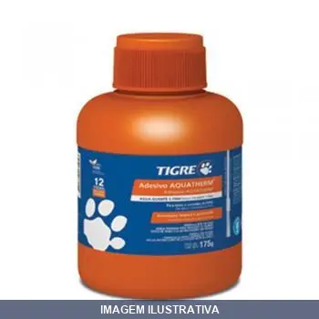
ADESIVO AQUATHERM TIGRE 175G
Indicação de Uso: Solda de tubos e conexões da linha CPVC para sistemas de água quente. Material e Resistência: Adesivo à base de misturas de solventes, formaldeídos, cetonas e resina de PVC. Resiste até 80°C. Vantagem Prática: Apresenta Selo Verde Low-VOC, indicado para construções com certificação LEED. Sem necessidade de ferramentas especiais para aplicação.
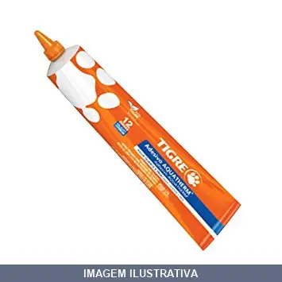
ADESIVO AQUATHERM TIGRE 17G
Adesivo específico para aplicações em sistemas hidráulicos e de água quente. Indicado para vedação e fixação de conexões e componentes em tubulações. Material adesivo de cura química, resistente a temperaturas elevadas e pressão. Vantagem prática: vedação segura em instalações de água quente e sistemas térmicos.
ADESIVO GAS INFLA SEGMENTO
Indicação de Uso: Identificar veículos transportadores de carga perigosa (gás inflamável classe 2) e material transportado de acordo com normas ABNT NBR 7500. Material e Resistência: Vinil autoadesivo, impermeável e resistente a intempéries. Vantagem Prática: Permanece intacto durante o transporte, com cores vivas em vermelho e preto para alta visibilidade.
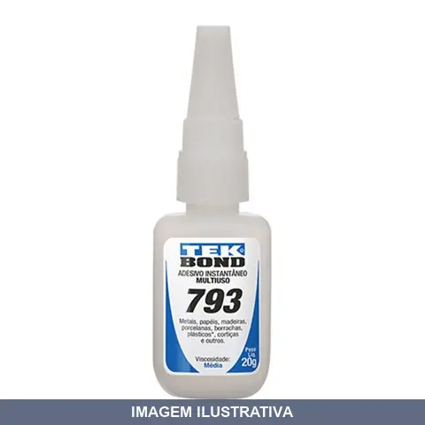
ADESIVO INST GR GEL TEK BOND
Indicação de Uso: Adesivo instantâneo para colagens que necessitam alta velocidade de cura e resistência em materiais porosos, metais, plásticos, borrachas, madeira e porcelana. Material e Resistência: Adesivo monocomponente à base de cianoacrilato. Cura inicia-se com contato com umidade do ar atmosférico. Cura inicial em 20 segundos, cura total em 24 horas. Vantagem Prática: Consistência em gel que não escorre, permite reposicionamento antes da cura e aplicação na
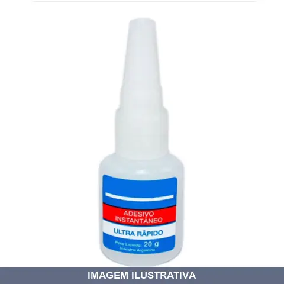
ADESIVO INST GR SUPERCIANO 020
É um adesivo instantâneo em base de etil cianoacrilato, monocomponente de polimerização espontânea por ação de umidade do ar. Permite adesões sumamente rápidas e resistentes em superfícies como metais, plásticos, borracha e material poroso como madeira, papel, cortiça, têxtil, superfícies acidas como cromadas e galvanizadas. Formulado especialmente para peças com superfícies ácidas.
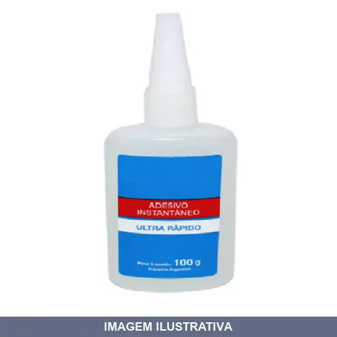
ADESIVO INST GR SUPERCIANO 100
É um adesivo instantâneo em base de etil cianoacrilato, monocomponente de polimerização espontânea por ação de umidade do ar. Permite adesões sumamente rápidas e resistentes em superfícies como metais, plásticos, borracha e material poroso como madeira, papel, cortiça, têxtil, superfícies acidas como cromadas e galvanizadas. Formulado especialmente para peças com superfícies ácidas.

ADESIVO INST GR TEK BOND 020 793
Adesivo instantâneo indicado para colagem rápida de materiais diversos. Proporciona fixação imediata em pequenas superfícies. Ideal para reparos e montagens que exigem secagem acelerada.
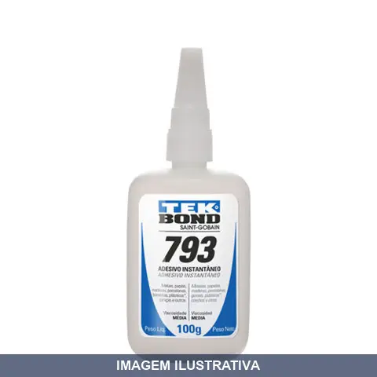
ADESIVO INST GR TEK BOND 100 793
Indicação de Uso: Adesivo instantâneo indicado para colagem rápida de materiais diversos. Material e Resistência: Formulação à base de cianoacrilato, proporciona fixação imediata e resistente. Vantagem Prática: Propicia união sem necessidade de prensagem prolongada, ideal para reparos e montagens em ambiente doméstico e profissional.
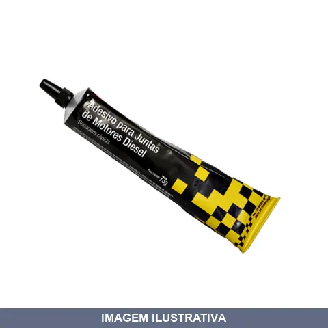
ADESIVO JUNTA MOTOR 3M
A Cola de Junta para motor a diesel é um adesivo indicado para colagem e vedação de juntas de motores a diesel, gasolina e álcool, além de juntas de câmbio e diferenciais de veículos, onde há necessidade de um adesivo resistente às pressões e temperaturas elevadas.
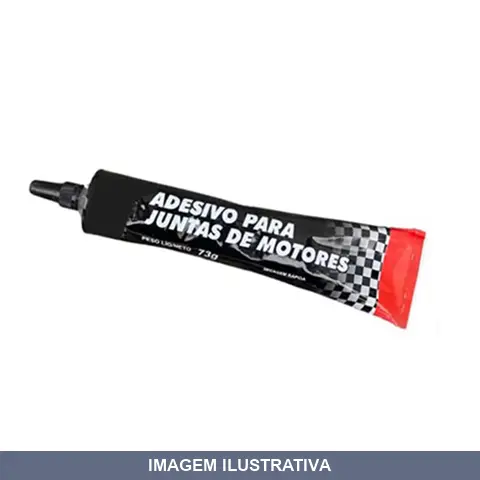
ADESIVO JUNTA MOTOR MUNDIAL PRIME
Produto indicado para colagem e vedação de junta de motores a diesel, gasolina e álcool, além de juntas de câmbio e diferenciais de veículos, onde há necessidade de um adesivo resistente às pressões e temperaturas elevadas.
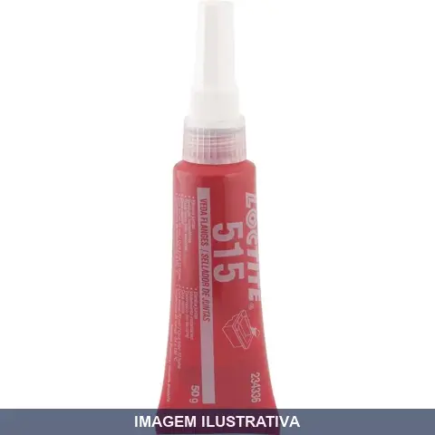
ADESIVO LINHA INDUSTRIAL VEDANTE ANAEROBICO LOCTITE
Indicação de Uso: Vedação e fixação anaeróbica de roscas, conexões e encaixes em aplicações industriais. Material e Resistência: Adesivo anaeróbico de cura química, resistente a vibrações e vazamentos. Vantagem Prática: Previne afrouxamento de peças e vazamentos em sistemas hidráulicos e pneumáticos.
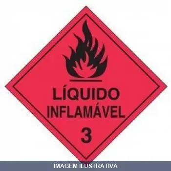
ADESIVO LIQ INFLA SEGMENTO
ADESIVO ADVERTENCIA VERMELHA 33 X 33 LIQUIDO INFLAMAVEL 3
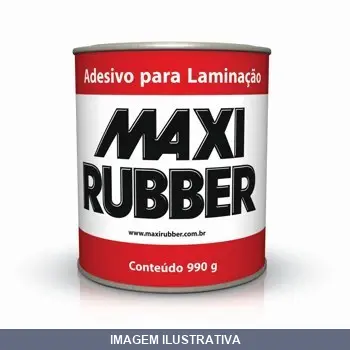
ADESIVO PARA LAMINACAO MAXI RUBBER
Indicação de Uso: Laminação de piscinas, banheiras, peças automotivas, náuticas e acessórios reforçados com fibra de vidro em processo aberto. Material e Resistência: Resina de poliéster insaturada e pré-acelerada. Suporta até 80°C. Tempo de secagem: 2 horas a 25°C. Vantagem Prática: Cura rápida, penetração na fibra de vidro, fácil aplicação e lixamento, aspecto homogêneo, alto poder de aderência.

ADESIVO PLASTICO BRANCO 400GR CARPLAST
Indicação de Uso: Adesivo indicado para colagem e fixação de peças plásticas em geral. Material e Resistência: Composição plástica com base em resina, oferecendo aderência em superfícies plásticas. Vantagem Prática: Apresentação em embalagem de 400g, adequada para projetos de médio porte e uso profissional em reparos e montagens.
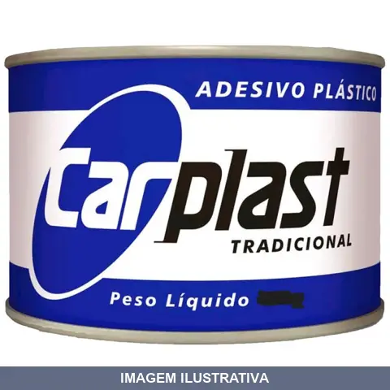
ADESIVO PLASTICO BRANCO CARPLAST
Indicação de Uso: Adesivo para fixação de peças plásticas em geral, ideal para montagens, reparos e colagens de materiais plásticos. Material e Resistência: Adesivo de base química com cor branca, formulado especificamente para aderência em superfícies plásticas. Vantagem Prática: Secagem rápida e fixação resistente para trabalhos de colagem permanente em plástico.

ADESIVO PLASTICO CINZA 400GR CARPLAST
Adesivo à base de plástico, apresentação em recipiente de 400gr, cor cinza. Indicado para colagem de peças plásticas e materiais similares. Oferece aderência duradoura em aplicações que exigem fixação permanente de componentes plásticos.
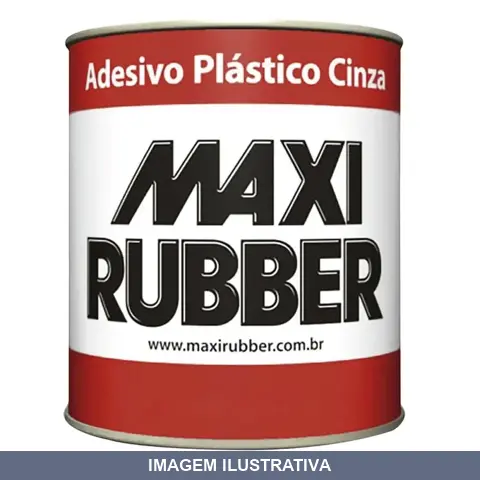
ADESIVO PLASTICO CINZA 500GR MAXI RUBBER
Indicação de Uso: Adesivo para colagem de materiais plásticos e similares em aplicações gerais. Material e Resistência: Formulação em base de borracha com pigmentação cinza. Vantagem Prática: Aderência duradoura para reparos e montagens de peças plásticas.

ADESIVO PLASTICO CINZA CARPLAST
Indicação de Uso: Adesivo para aplicações em plástico. Material e Resistência: Composição adesiva cinza, desenvolve resistência de aderência em materiais plásticos. Vantagem Prática: Fixação de peças e componentes plásticos em reparos e montagens industriais e domésticas.
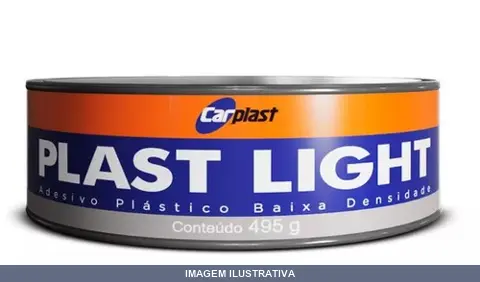
ADESIVO PLASTICO PLAST-LIGHT GR CARPLAST
Massa plástica de baixa densidade da Carplast, embalagem com 495 g. Indicada para reparo e preenchimento de superfícies em lataria/carroceria, facilitando o lixamento. Proporciona bom acabamento e aderência em trabalhos de funilaria e preparação antes da pintura.
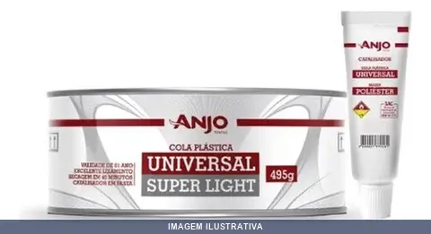
ADESIVO PLASTICO SUPER LIGHT GR UNIVERSAL ANJO
Adesivo de secagem rápida indicado para colagem universal de materiais plásticos e afins. Fórmula leve que permite aplicação prática em diversos tipos de superfícies. Ideal para reparos e montagens de peças plásticas em geral.
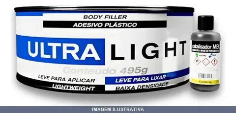
ADESIVO PLASTICO ULTRA-LIGHT GR MAXIRUBBER
Indicação de Uso: Corrigir imperfeições na funilaria de veículos, superfícies metálicas, galvanizados, máquinas e equipamentos. Recomendado também para mármore, granito e colagem de cubas. Material e Resistência: Adesivo plástico com resina poliéster modificada, cargas minerais, pigmentos e aditivos. Catalisador: Peróxido de MEK. Suporta até 80°C. Secagem ao toque em 20 a 30 minutos. Vantagem Prática: Fácil aplicação e lixamento com baixa
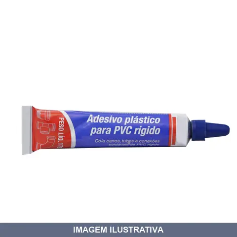
ADESIVO PVC SILOC 017G [001050]
Adesivo de PVC a base de copolímero e solventes. Formulado para soldagem de canos, registros e válvulas soldáveis de PVC para água fria. Cura por evaporação de solvente, formando ótima união em tubos e conexões.
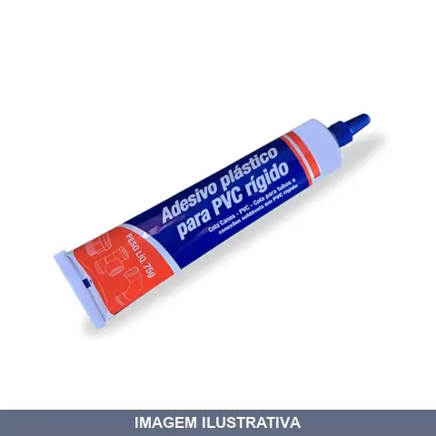
ADESIVO PVC SILOC 075G [001052]
Adesivo especial para tubulações de PVC rígido em sistemas com pressão e de esgoto. Sua aderência inicial moderada permite o reposicionamento durante a colagem.
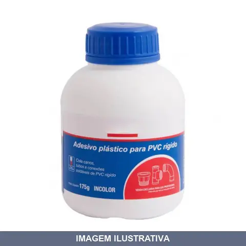
ADESIVO PVC SILOC 175G [001053]
Adesivo específico para PVC, apresentação de 175g. Indicado para colagem e fixação de tubos, conexões e peças em PVC em aplicações hidráulicas e de encanamento. Material com aderência adequada para união permanente de componentes plásticos. Facilita montagem de sistemas de tubulação com vedação segura nas junções.
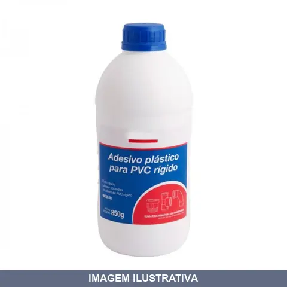
ADESIVO PVC SILOC 850G [003706]
Indicação de Uso: Colar canos, tubos e conexões de PVC rígido para água fria, registros e válvulas soldáveis. Material e Resistência: Adesivo líquido à base de copolímero de PVC e solventes. Cura pela evaporação do solvente, formando união resistente entre tubos e conexões.
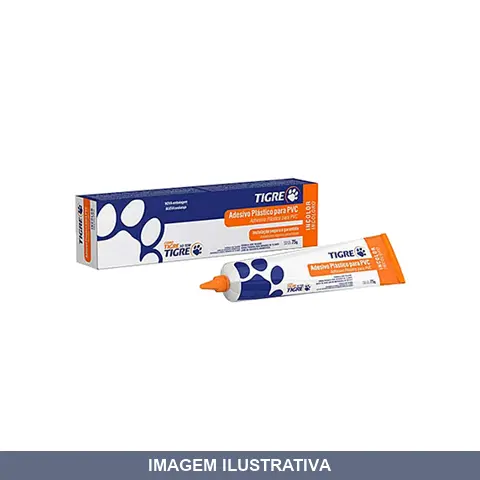
ADESIVO PVC TIGRE 075G [017936]
Indicação de Uso: Colagem de tubos e conexões de PVC em instalações hidráulicas e de esgoto. Material e Resistência: Adesivo específico para PVC, oferece aderência permanente entre peças plásticas. Vantagem Prática: Facilita a montagem rápida de sistemas de canalização com vedação confiável.
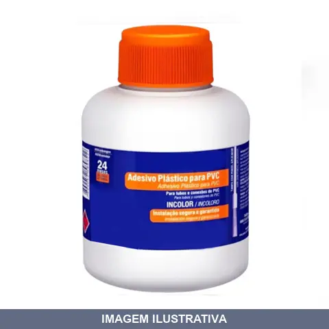
ADESIVO PVC TIGRE 175G [008973]
FUNÇÃO: Promover a união entre tubos e conexões de pvc tigre por meio de soldagem a frio. APLICAÇÃO: Processo de soldagem das linhas soldável marrom para agua friam registros e valvulas soldaveis. Esgoto serie normal e reforçada e linha irriga LF (Ponta Bolsa Lisa)
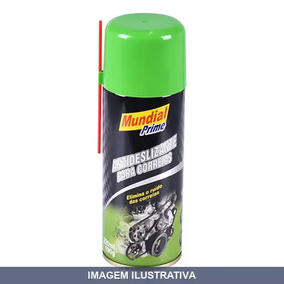
ANTIDESLIZANTE PARA CORREIAS MUNDIAL
Antideslizante para correias em spray. Aplicável em todos os tipos de correias, elimina ruídos de deslizamento nas polias, auxilia na transferência de força e aumenta a durabilidade das correias. Não provoca danos a superfícies plásticas e pintadas.
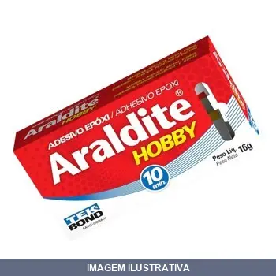
ARALDITE 10MIN HOBBY TEK BOND 16G
Adesivo epóxi bicomponente de cura rápida com tempo de trabalho de 10 minutos. Indicado para colagem de materiais diversos em projetos de hobby e pequenos reparos. Material resistente após a cura completa. Vantagem prática: tempo reduzido de secagem permite agilidade no trabalho.
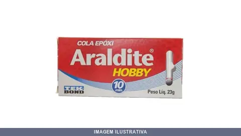
ARALDITE 10MIN HOBBY TEK BOND 23G
Adesivo epóxi bicomponente de cura rápida com tempo de trabalho de 10 minutos. Indicado para colagem de materiais diversos em projetos de hobby e pequenos reparos. Material resistente após a cura completa. Vantagem prática: tempo reduzido de secagem permite agilidade no trabalho.
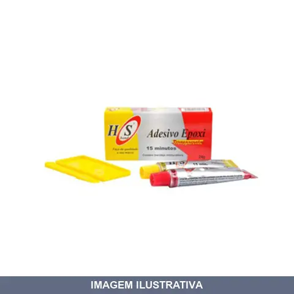
ARALDITE 15MIN HS BOND
Adesivo epóxi bicomponente de cura rápida em 15 minutos. Indicado para colagem de materiais diversos em trabalhos de reparo, montagem e fixação. Material de alta aderência indicado para uso geral em aplicações que exigem secagem acelerada.
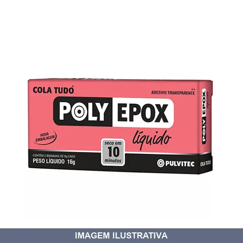
ARALDITE POLYEPOXI 10MIN POLYFORT
Adesivo epóxi bicomponente com tempo de cura rápida. Indicado para colagem e reparo de metais, cerâmicas, vidro, madeira e plásticos. Fornecido em apresentação pronta para uso. Aplicável em trabalhos de manutenção, reparo estrutural e montagem de componentes.
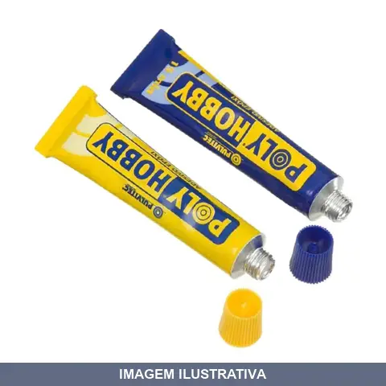
ARALDITE POLYHOBBY 10MIN PULVITEC
Adesivo epóxi bicomponente de cura rápida. Indicado para colagem e reparo de materiais diversos como plástico, madeira, metal e cerâmica em projetos de hobby e pequenos reparos domésticos. Tempo de cura de 10 minutos.
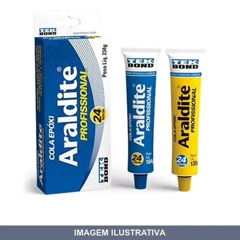
ARALDITE PROFISSIONAL 24H TEK BOND
Adesivo epóxi bicomponente de cura lenta com 24 horas para endurecimento completo. Indicado para colagem estrutural de materiais diversos em aplicações que exigem tempo de trabalho prolongado. Indicação de Uso: Reparos estruturais, montagens e colagens que requerem posicionamento ajustável / Material e Resistência: Desenvolve resistência mecânica elevada após cura completa / Vantagem Prática: Tempo estendido de trabalho permite ajustes e alinhamento preciso antes da fixação final.
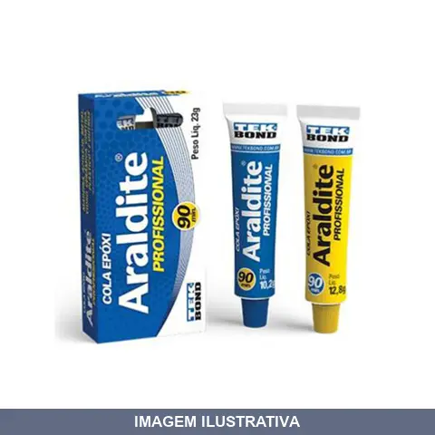
ARALDITE PROFISSIONAL 90MIN TEK BOND
Adesivo epóxi bicomponente com tempo de cura de 90 minutos. Indicado para colagem de materiais diversos em aplicações que exigem maior tempo de trabalho e ajuste de peças. Oferece resistência mecânica após cura completa. Vantagem Prática: tempo estendido de cura permite melhor posicionamento e alinhamento das peças antes da fixação final.
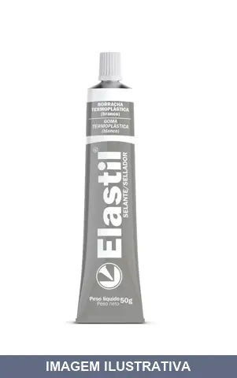
BORRACHA TERMOPLASTICA BRANCO ELASTIL 050G
Indicação de Uso: Vedação, fixação e moldagem em tubulações, reparos automotivos, marinhos e industriais. Selagem de frestas e junções. / Material e Resistência: Borracha termoplástica sintética com excelente aderência, flexibilidade e resistência a variações térmicas. Moldável manualmente. / Vantagem Prática: Reutilizável, não endurece facilmente e adapta-se a diferentes superfícies.
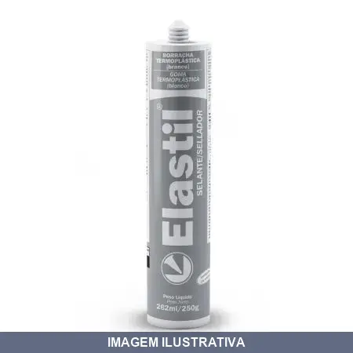
BORRACHA TERMOPLASTICA BRANCO ELASTIL 265G
Indicação de Uso: Vedação e fixação em toldos, tubulações de ar condicionado e refrigeração, reparos automotivos e de embarcações náuticas. Elimina infiltrações em telhados e lajes. Material e Resistência: Selante composto por borrachas sintéticas e solventes orgânicos. Alto poder de aderência e flexibilidade. Cura por evaporação de solvente.
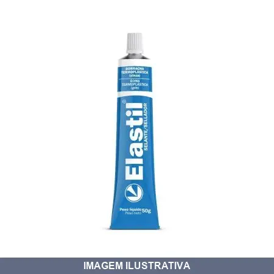
BORRACHA TERMOPLASTICA CINZA ELASTIL 050G
Indicação de Uso: Selagem, vedação e isolamento em aplicações gerais que requerem flexibilidade e resistência. Material e Resistência: Borracha termoplástica cinza, resistente a deformação permanente. Vantagem Prática: Reutilizável e moldável, adequada para reparos e manutenção em diferentes superfícies.
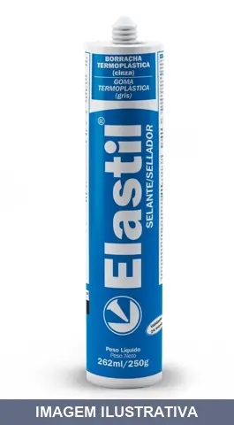
BORRACHA TERMOPLASTICA CINZA ELASTIL 265G
Borracha termoplástica cinza indicada para vedação, isolamento e proteção em aplicações gerais. Material termoplástico oferece flexibilidade e resistência a deformação. Adequada para uso em tubulações, encaixes e áreas que requerem vedação ou amortecimento.
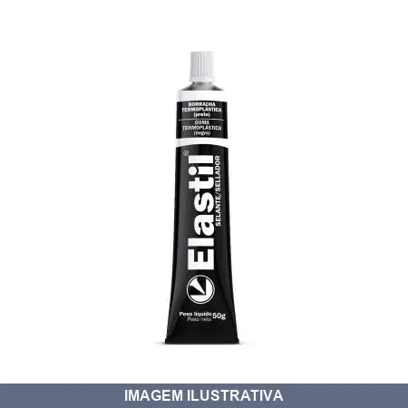
BORRACHA TERMOPLASTICA PRETO ELASTIL
Indicação de Uso: Vedação e fixação em junções, emendas de tubulações e reparos em estruturas. Aplicável em telhados, lajes e áreas que necessitam vedação contra infiltrações. / Material e Resistência: Borracha termoplástica com alta aderência e flexibilidade, oferecendo resistência à tração e variações de temperatura. / Vantagem Prática: Seca por vulcanização, permitindo vedação durável sem necessidade de aquecimento adicional.
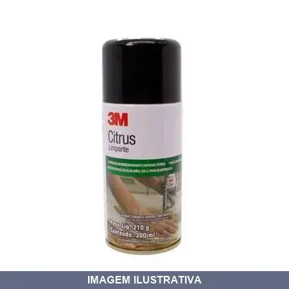
CITRUS LIMPANTE REMOVEDOR DE ADESIVO SPRAY 3M
Limpador removedor de adesivos e sujeiras à base de óleo cítrico. Remove resíduos de adesivos, graxas, óleos pesados, gorduras e silicone. Formulado para emulsionar com água e não contém destilados de petróleo. Indicado para peças metálicas, ferramentas, motores e superfícies rígidas. Aplicação em forma de spray.
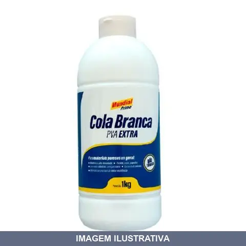
COLA BRANCA
COLA BRANCA UNIVERSAL 1KG MUNDIAL PRIME REF ANTIGA: 4193
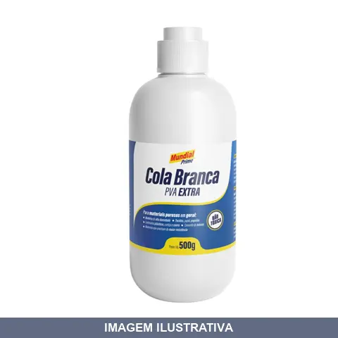
COLA BRANCA AEROFLEX
Indicação de Uso: Colagem de materiais porosos como madeira, papel, papelão e materiais similares em trabalhos de marcenaria, artesanato e reparos domésticos. Material e Resistência: Adesivo à base de água, proporciona fixação resistente após secagem. Vantagem Prática: Apresentação em embalagem de 500g, adequada para projetos de tamanho médio com economia de produto.
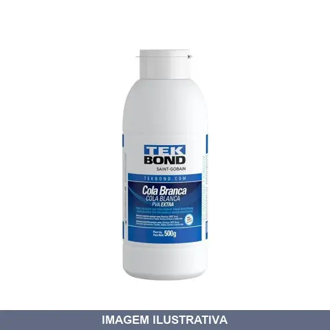
COLA BRANCA PCA EXTRA TEK BOND 0500G
Indicação de Uso: Colagens em madeira, laminados, aglomerados, fórmica, papel, papelão e superfícies porosas em geral. Indicada para trabalhos artesanais, marcenaria, fabricação de móveis e reparos domésticos. Material e Resistência: Adesivo à base de PVA (Acetato de Polivinila) com composição de poliacetato de vinila, álcool polivinílico, aditivos e água. Possui teor de sólidos superior ao das colas brancas comuns, proporcionando colagem mais resistente. Secagem total entre 24 e 48 horas.
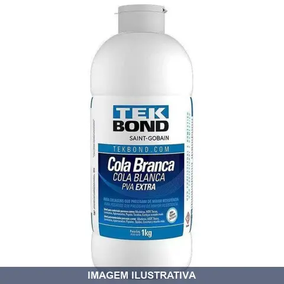
COLA BRANCA PCA EXTRA TEK BOND 1000G
Indicação de Uso: Colagens em madeira, laminados, aglomerados, fórmica, papel, papelão e superfícies porosas em geral. Indicada para trabalhos artesanais, marcenaria, fabricação de móveis e reparos domésticos. Material e Resistência: Adesivo à base de PVA (Acetato de Polivinila) com composição de poliacetato de vinila, álcool polivinílico, aditivos e água. Possui teor de sólidos superior ao das colas brancas comuns, proporcionando colagem mais resistente. Secagem total entre 24 e 48 horas.

COLA CONTATO FCC DUM DUM
Indicação de Uso: Cola de contato para colagem manual de tecidos, espumas, couros e materiais porosos. Material e Resistência: Adesivo de alta viscosidade com secagem rápida e alto teor de sólidos, garantindo resistência durável na colagem. Vantagem Prática: Aplicação simples e direta, proporcionando aderência imediata entre superfícies.
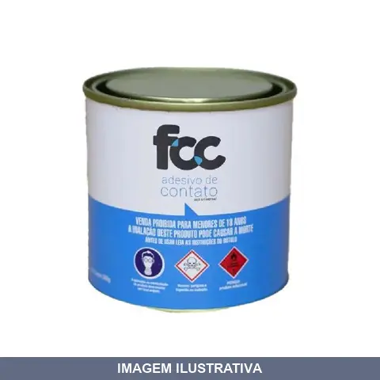
COLA CONTATO GR FCC DUM DUM
Indicação de Uso: Cola de contato para colagem de materiais diversos como tecidos, espumas, madeira, couro e plásticos. Aplicação manual com pincel ou espátula. / Material e Resistência: Alta viscosidade e rápida secagem com excelente resistência de colagem. / Vantagem Prática: Fácil aplicação e aderência imediata após contato entre superfícies.
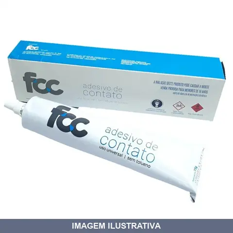
COLA CONTATO GR FCC DUN DUN
Indicação de Uso: Cola de contato para colagem instantânea de materiais diversos em trabalhos manuais, artesanatos, reparos e montagens. Material e Resistência: Adesivo de contato que proporciona fixação rápida e permanente entre superfícies. Vantagem Prática: Aplicação imediata sem necessidade de grampo ou ferramenta de fixação durante a secagem.
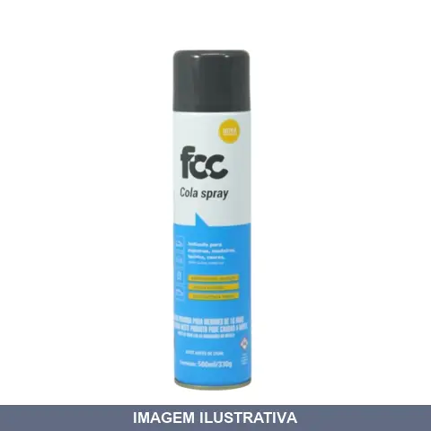
COLA CONTATO GR SPRAY FCC DUN DUN
Indicação de Uso: Cola de contato em spray para fixação e colagem de materiais diversos em trabalhos de marcenaria, artesanato e reparos gerais. Material e Resistência: Adesivo de contato resistente, apresentado em embalagem spray de 330g para aplicação prática e controlada. Vantagem Prática: Aplicação em spray facilita distribuição uniforme, proporcionando secagem rápida e fixação imediata dos materiais.
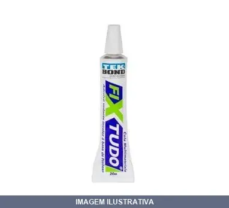
COLA FIXA TUDO TEK BOND
Indicação de Uso: Colagem universal em diversos materiais e superfícies. Material e Resistência: Adesivo de alta fixação. Vantagem Prática: Uso prático em pequenas quantidades, ideal para reparos e colagem pontual de peças.
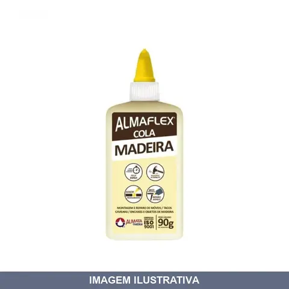
COLA MADEIRA 090GR ALMAFLEX
Adesivo à base de PVA para colagem de madeira, cortiça, aglomerado, laminado plástico, HDF e MDF. Pronto para usar, sem solventes, odor suave e fácil limpeza. Indicado para consertos e reparos de móveis e objetos em madeira.
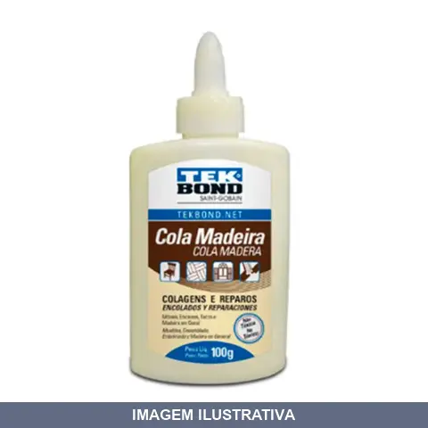
COLA MADEIRA 100GR TEK BOND
COLA MADEIRA 100GR COLA MADEIRA é um poderoso adesivo à base de PVA com alta força de colagem*, ideal para consertos e reparos de móveis e objetos de madeira, cortiças, aglomerados, laminados plásticos, HDF e MDF. Já vem pronto para usar, é livre de solventes e demais componentes químicos, possui odor suave e proporciona fácil manuseio e limpeza. *Não adere materiais à base de Polietileno, Polipropileno e PTFE (resina antiaderente).
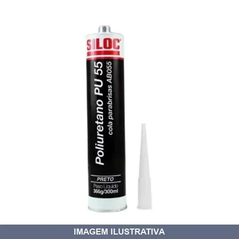
COLA PARABRISAS PU55 PRETO SILOC
S. PU55 PRETO 300ML Recomendado para: Reposição de vidros automotivos com ou sem antenas integradas. SILOC® PU 55 atende as normas internacionais de segurança. Características SILOC® PU 55 é um selante a base de elastômeros de poliuretano monocomponente que cura sob a influência da umidade atmosférica, para formar uma junta flexível e resistente, com boa aderência sobre a maioria dos materiais. Modo de Uso A superfície deve estar limpa, seca e isenta de qualquer resíduo de pó, graxa e umidade. A
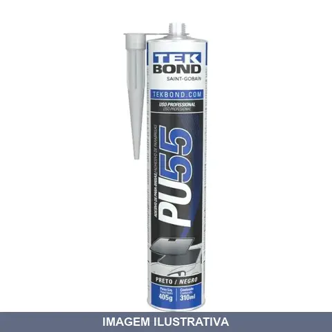
COLA PARABRISAS PU55 PRETO TEK BOND 310ML
Indicação de Uso: Selante para reposição e fixação de vidros automotivos, com ou sem antenas integradas. / Material e Resistência: Elastômero de poliuretano monocomponente que cura pela umidade atmosférica, formando junta flexível e resistente com boa aderência em diversos materiais. / Vantagem Prática: Atende normas internacionais de segurança para aplicações automotivas.
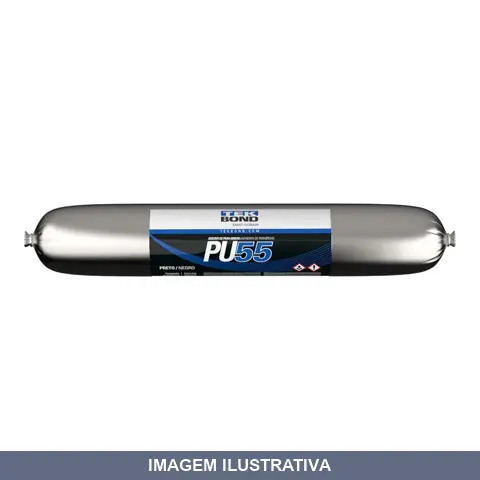
COLA PARABRISAS PU55 PRETO TEK BOND 600ML
Indicação de Uso: Cola para reposição e vedação de vidros automotivos, com ou sem antenas integradas. / Material e Resistência: Selante monocomponente à base de poliuretano que cura pela umidade atmosférica, formando junta flexível e resistente com boa aderência em diversos materiais. / Vantagem Prática: Aplicação prática em reparos automotivos com cura rápida e vedação confiável.
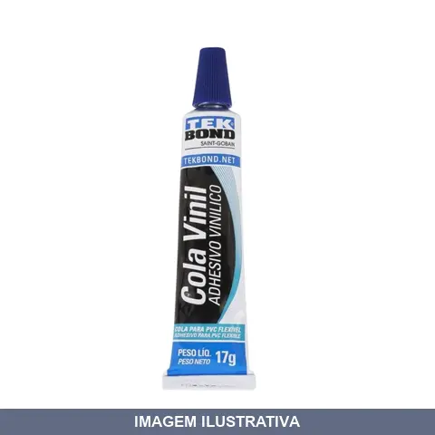
COLA VINIL TEK BOND
Indicação de Uso: Colagem de PVC flexível entre si. Ideal para reparos de barracas de camping, lonas de caminhão, boias infláveis, piscinas e malas. Material e Resistência: Base vinílica com rápida aderência, boa flexibilidade e resistência a água e intempéries. Vantagem Prática: Secagem inicial de 10 a 20 minutos, cura total em 24 horas. Acompanha pedaço de vinil para reforçar reparos.
COLA VINIL WORKER
Indicação de Uso: Adesivo para colagens de PVC flexível, couro, borracha, laminados decorativos, plástico, concreto, compensado e MDF. Ideal para reparos em barracas de camping, lonas, boias infláveis, piscinas e malas. Material e Resistência: Fórmula de secagem rápida com aderência. Mantém a flexibilidade das peças coladas e oferece resistência à água e intempéries. Vantagem Prática: Fácil aplicação, indicado para pequenos reparos e versátil para diversos materiais.
COLA VULK VIPAL
COLA VULK 900ML / 685 G Adesivo para ser aplicado na borracha Vulk • Possui excelente adesão, versatilidade de uso e perfeita compatibilidade com camelback e pré-moldado
CONVERTEDOR DE FERRUGEM SPRAY TF7
Neutraliza ferrugem convertendo-a em camada protetora de cor preta. Prepara superfícies metálicas para aplicação de tintas e vernizes. Pronto para uso, seca em aproximadamente 1 hora. Ideal para ferro, aço carbono, zinco e cobre. Dispensa necessidade de lixamento ou jateamento.
CONVERTEDOR DE FERRUGEM TF7 100ML
Neutraliza ferrugem convertendo-a em camada protetora de cor preta. Prepara superfícies metálicas para aplicação de tintas e vernizes. Pronto para uso, seca em aproximadamente 1 hora. Ideal para ferro, aço carbono, zinco e cobre. Dispensa necessidade de lixamento ou jateamento.
CONVERTEDOR DE FERRUGEM TF7 500ML
Indicação de Uso: Produto químico destinado ao tratamento de superfícies oxidadas e enferrujadas, convertendo a ferrugem em camada protetora. Ideal para preparação de peças metálicas antes de pintura ou acabamento. Material e Resistência: Formulação líquida em embalagem de 500ml para aplicação direta. Vantagem Prática: Elimina a necessidade de lixamento abrasivo, facilitando o preparo de superfícies metálicas com ferrugem.
CONVERTEDOR DE FERRUGEN AEROSSOIS CHEMICOLOR
Convertedor de ferrugem em apresentação aerossol. Indicado para tratamento e neutralização de superfícies oxidadas antes de pintura. Transforma a ferrugem em camada protetora, preparando o substrato para receber acabamento. Aplicação em metais ferrosos com corrosão superficial.
DESENGRAXANTE ACTION LITRO QUIMISTAR
Indicação de Uso: Limpeza e desengraxamento de superfícies, peças e equipamentos. Material e Resistência: Produto químico desengraxante em apresentação líquida. Vantagem Prática: Remove resíduos de graxa e óleo para preparação de superfícies e manutenção industrial.
DESENGRAXANTE GATILHO H-7
Indicação de Uso: Limpeza e desengraxe de superfícies, peças, ferramentas e equipamentos. Material e Resistência: Formulação líquida desengraxante em frasco com gatilho para aplicação. Vantagem Prática: Aplicação prática e direcionada através do gatilho pulverizador, facilitando o uso em áreas de difícil acesso.
DESENGRAXANTE LITRO GATILHOL H-7
Indicação de Uso: Desengraxante para limpeza e remoção de graxa, óleo e resíduos em superfícies variadas. Material e Resistência: Produto líquido em apresentação de gatilho pulverizador. Vantagem Prática: Aplicação prática e controlada através do sistema de gatilho, ideal para limpeza em áreas de difícil acesso.
DESENGRAXANTE LITRO H-7
Indicação de Uso: Desengraxante para limpeza e remoção de graxas, óleos e resíduos em superfícies metálicas, ferramentas e componentes mecânicos. Vantagem Prática: Apresentação em volume de 5 litros, adequada para uso profissional e industrial com maior rendimento.
DESENGRAXANTE LITRO REFIL H-7
Indicação de Uso: Limpeza e desengraxe de superfícies, máquinas, ferramentas e peças industriais. Material e Resistência: Formulação desengraxante para remoção de graxa, óleo e resíduos. Vantagem Prática: Formato refil econômico para reabastecimento.
DESENGRAXANTE PASTA GITANES 04.0KG [021198]
Indicação de Uso: Remoção de graxas, óleos e sujeiras pesadas em peças metálicas, ferramentas e superfícies industriais. Indicado para mecânicos, metalúrgicos, gráficos, comerciantes, químicos e operários em geral. Material e Resistência: Formulado com tensoativos aniônicos, pó abrasivo, alcalinizante, essência e água. Vantagem Prática: Pasta de fácil aplicação e eficaz na limpeza profunda de superfícies e mãos.
DESENGRAXANTE PASTA PINHEIRO 01.0KG [021931]
Indicação de Uso: Desengraxante em pasta indicado para remoção de graxa, óleo e resíduos em superfícies diversas. Material e Resistência: Formulação em pasta com aroma de pinheiro. Vantagem Prática: Aplicação direta e prática, com aderência prolongada na superfície para ação de limpeza.
DESENGRIPANTE M500
DESENGRIPANTE M500 12 X 250ML/180G ONU 1950 AEROSSOIS 2.1 (23)
DESENGRIPANTE MUNDIAL PRIME
MP1 DESENGRIPANTE ANTICORROSIVO 100ML SPRAY Produto que lubrifica e desengripa peças mecânicas, eliminando a umidade, protegendo contra a ferrugem e corrosão, pois possui ação anticorrosiva. NCM NF: 38249941 NÃO CADASTRADO
DESENGRIPANTE PEGAMIL
Indicação de Uso: Desengripante e lubrificante em spray para soltar peças oxidadas, parafusos, roscas e componentes travados. Auxilia na remoção de corrosão e ferrugem em ferramentas e mecanismos metálicos. Material e Resistência: Formulado com bissulfeto de molibdênio como aditivo lubrificante. Contém aguarrás mineral, petróleo e butano em sua composição. Vantagem Prática: Super penetrante que atua rapidamente em áreas de difícil acesso. Libera peças pintadas e coladas, além de proteger
DESENGRIPANTE TEK LUB TEK BOND
Indicação de Uso: Lubrifica, desengripa e protege peças metálicas enferrujadas ou travadas. Recomendado para dobradiças, fechaduras, trincos, roscas, parafusos, engrenagens, articulações e componentes de máquinas industriais, automóveis, bicicletas e ferramentas. Material e Resistência: Líquido formulado com solventes e aditivos especiais que formam camada protetora contra umidade e corrosão, com densidade de 0,77 a 0,82 g/cm³. Vantagem Prática: Penetra com facilidade em mecanismos, elimina
DESENGRIPANTE WHITE LUB
Desengripante em spray para limpeza e lubrificação de peças metálicas. Indicação de Uso: Desengripar componentes travados, lubrificar mecanismos e proteger superfícies metálicas contra ferrugem e oxidação. Vantagem Prática: Penetração rápida em articulações, com propriedades de proteção temporária. Produto químico — consulte rótulo para informações de segurança, precauções e modo de uso.
DETERGENTE DESINCRUSTANTE AC302 (INTERCAP) SUNIEX
Indicação de Uso: Detergente formulado para remoção de incrustações em superfícies e equipamentos. Aplicável em limpeza industrial e manutenção. Material e Resistência: Produto químico líquido desincrustante. Vantagem Prática: Facilita a limpeza de depósitos minerais e resíduos acumulados em tubulações, equipamentos e superfícies metálicas.
DUREPOXI LOCTITE
DUREPOXI LOCTITE 100G CODIGO COFEMA: 329 NEGRAO: ADESIVO DUREPOXI 100G - HENKEL 171662 Recomendado para: Metal, Vidro, Madeira, Cerâmica, Cimento, Mármore e Plástico Propriedades: Extra forte e resistente Endurece até debaixo d'água Cola quase todos os materiais Resiste a temperaturas (-50°C / +150°C) Resultados perfeitos: acabamento final com tinta e/ou verniz, serra ou lixa
ESPUMA POLIURETANO EXPANSIVA PROFISSIONAL / SILOC
Espuma poliuretano em aerosol que se expande ao entrar em contato com o ar. Possui aderência em alvenaria, tijolos, cimento, gesso, poliestireno, metais e madeira. Rellena huecos, cavidades e sela conductos; fixa marcos de portas e ventanas. Endurece rapidamente e pode ser cortada, lixada e pintada. Adequada para exteriores com proteção de pintura contra água e radiação UV. Tempo de cura parcial: 15-20 minutos. Temperatura de operação: -40°C a +90°C.
ESPUMA POLIURETANO MUNDIAL PRIME
ESPUMA DE POLIURETANO 500ML 340G MUNDIAL PRIME A Espuma de Poliuretano foi desenvolvida para: 1) Fixação de Portas e Janelas (colocação de batentes junto a alvenaria). 2) Vedação de ar condicionado. 3) Vedação de caixas de distribuição de força, energia elétrica ou telefonia. 4) Vedação de Telhas. 5) Colocação de banheiras de hidromassagem. 6) Vedação de canos, torneiras e condutores em geral. 7) Reparos em barcos, pranchas de surf. 8) Isolamento térmico e acústico. 9) Preenchimento de buracos o
ESPUMA POLIURETANO TEK BOND 300ML
Espuma de poliuretano expansível para preenchimento e vedação de espaços. Indicação de Uso: fixação de batentes de portas e janelas, vedação de ar condicionado, caixas de distribuição elétrica e telefônica, telhas, tubulações, torneiras e condutores, reparos estruturais. Vantagem Prática: expansão controlada que preenche completamente vãos e frestas, proporciona isolamento térmico e acústico, aderência em múltiplas superfícies.
ESPUMA POLIURETANO TEK BOND 500ML
Espuma de poliuretano expansível para vedação e preenchimento de vãos. Indicação de Uso: fixação de portas, janelas e batentes; vedação de ar condicionado, caixas de distribuição elétrica, telhas e tubulações; isolamento de trincas e fissuras. Material e Resistência: poliuretano expansível com aderência em múltiplos substratos. Vantagem Prática: preenchimento de espaços irregulares com selagem hermética.
ESPUMA POLIURETANO TEK BOND 750ML
Espuma de poliuretano expansiva para vedação e preenchimento. Indicação de Uso: fixação de portas e janelas, vedação de ar condicionado, caixas de distribuição elétrica e telefônica, telhas, banheiras, canos, torneiras e condutores. Também adequada para reparos em estruturas diversas. Material e Resistência: poliuretano de alta expansão com aderência em múltiplos substratos. Vantagem Prática: preenchimento eficaz de vãos e frestas, com isolamento térmico e acústico.
FITA ADESIVA DE ALUMINIO 30MX PLUS LOTUS
Fita adesiva com dorso de alumínio e adesivo acrílico. Ideal para dissipação de calor, reflexão de luz, vedação de dutos de ar-condicionado, tubos de refrigeração e isolamento térmico. Resiste a temperaturas entre -20°C e 90°C, oferecendo ótima adesividade em superfícies metálicas, plásticas e vidradas.
FITA ADESIVA DE ESPUMA VONDER
FITA ESPUMA ADESIVA 6 X 12 MM 4 METROS VONDER NCM: 39191010 Indicada para vedação de portas, janelas, ar-condicionado, automóveis, barcos, entre outros. Protege contra poeira, umidade e vibração. A superfície pode ser danificada com a retirada da fita, pois o adesivo não é facilmente removível. Excelente impermeabilidade e ótima adesão. Possui proteção UV e antimofo.
FITA CREPE 24MMX AFA
FITA ADESIVA CREPE COD: 140 24MM X 40 METROS Fita Adesiva AFA Crepe – Uso Geral Cód. 140 Características: Dorso: Papel Crepe 40g/m² tratado à base d’água Adesivo: Base borracha e resinas sintéticas Cor: Palha Claro Validade: Prazo impresso no tubete / arruela Embalagem: Filme encolhível / Caixa de papelão (identificação do lote/corrida impressa na caixa) Identificação do Código de Barras impressa no Pacote e na Caixa Aplicações: Mascaramento/pintura Mobiliária e imobiliária; Trabalhos Escolares,
FITA DE REPARO 5CMX 150PSI AJAX
MATERIAL:TECIDO DE FIBRA DE VIDRO E POLIURETANO INDUCADO PARA REPAROS EM TUBOS MANGUEIRAS E ENCANAMENTOS RESISTENTE E BAIXA E ALTA TEMPERATURAS 45 A 150 AGUENTA PRESSAO DE ATE 150PSI
FITA DRYWALL 48MMX AZUL PLUS LOTUS
Indicação de Uso: Fita de papel para acabamento de drywall, ideal para vedação de junções entre placas de gesso acartonado. Material e Resistência: Fita de papel com adesivo, própria para aplicação em trabalhos de drywall e gesso. Vantagem Prática: Facilita o acabamento e vedação de emendas em placas de gesso acartonado.

FITA DUPLA FACE ,5MMX 3M
Fita dupla face adesiva com transferência transparente. Indicação de Uso: fixação de placas de identificação, painéis e componentes. Material e Resistência: alta resistência a solventes, compensa dilatação térmica, distribui esforço mecânico uniformemente. Vantagem Prática: colagem permanente com acabamento limpo e sem resíduos.

FITA DUPLA FACE 09MMX AFA
Fita adesiva dupla face com núcleo de espuma de polietileno e adesivo acrílico em ambos os lados. Indicação de Uso: fixação de emblemas, chapas, frisos externos e união de materiais como vidro, metais, madeiras tratadas e plásticos. Material e Resistência: adesivo acrílico com excelente aderência em superfícies lisas e limpas. Vantagem Prática: aplicação limpa sem resíduos de adesivo, ideal para acabamento profissional e trabalhos de comunicação visual.
FITA DUPLA FACE 12MMX 02M 421
FITA TRANSFERIVEL ACRILICA COD: 421 1,0MM 12 MM X 02 METROS AFA Double - Dupla Face Transferível Acrílica - cód 421 Características: Dorso: Massa de adesivo acrílico Liner: Filme de polietileno Espessura: 1,0mm Cor: Transparente Aplicações: Fixação de emblemas, chapas e frisos externos. União de materiais como vidro, metais, madeiras tratadas e plásticos. Comunicação visual. Benefícios: Resiste a solventes, umidade e calor. Reduz vibrações, ruídos, condição de corrosão e compensam dilatações

FITA DUPLA FACE 12MMX 3M 05M
4910 ROLO 12MM X 5 METROS ESTOJO 3M VHB 4910 RL 12MMX5M CS FITA VHB CÓDIGO ANTERIOR: HB004221840 NEGRAO: FITA DUPLA FACE VHB 4910 12MMX5M Alta resistência a solventes Compensa a dilatação térmica das partes unidas Proporciona a distribuição do esforço mecânico Colagem permanente com acabamento limpo Fita dupla - face de adesivo transferível transparente indicada para fixação de placas de identificação, canaletas, PDV's, expositores e displays, em diversos tipos de substratos. As fitas VHB são i
FITA DUPLA FACE 12MMX 3M 20M
Fita dupla face de adesivo transferível transparente. Indicação de Uso: Fixação de placas, painéis, emblemas e componentes que requerem acabamento limpo sem parafusos ou rebites. Material e Resistência: Alta resistência a solventes, compensa dilatação térmica das partes unidas. Vantagem Prática: Distribui uniformemente o esforço mecânico, proporciona colagem permanente com resultado estético.
FITA DUPLA FACE 12MMX ESPUMA BC AFA
FITA DUPLA FACE DOC: 305 0,8MM 12MM X 02 METROS AFA Double - Dupla Face Espuma - cód 305 Características: Dorso: Espuma Branca Adesivo: Sintético alta performance Liner: Filme de Polietileno Espessura: 0,8mm Embalagem: Filme encolhível / Caixa de papelão (identificação do lote/corrida impressa na caixa) Aplicação: Fixa objetos e peças leves em superfícies irregulares. Ideal para decoração, artesanato, trabalhos manuais e escolares. Observações: Importante realizar teste prático para verificar
FITA DUPLA FACE 12MMX TRANSP 3M
Fita adesiva dupla face transparente marca 3M da linha Scotch. Indicada para fixação permanente de quadros, espelhos e peças de decoração em superfícies lisas como vidro, acrílico e metal. Composição: massa de adesivo acrílico transparente de alta adesão com liner de polietileno. Suporta até 400g em fixações de 15cm. Aplicação fácil e discreta, elimina necessidade de pregos e parafusos. Para ambientes internos.
FITA DUPLA FACE 12MMX USO INTERNO/EXTERNO 3M
Fita adesiva dupla face de alta aderência para fixação permanente. Indicada para fixação de placas, números, luminárias e demais elementos em paredes, concreto pintado, madeira, metais e vidros. Resistente a variações de temperatura e umidade, adequada para uso em ambientes internos e externos.
FITA DUPLA FACE 19MMX 3M 05M
4910 ROLO ESTOJO 19MM X 5 METROS ESTOJO Alta resistência a solventes Compensa a dilatação térmica das partes unidas Proporciona a distribuição do esforço mecânico Colagem permanente com acabamento limpo Fita dupla - face de adesivo transferível transparente indicada para fixação de placas de identificação, canaletas, PDV's, expositores e displays, em diversos tipos de substratos. As fitas VHB são ideais para utilização em muitas aplicações industriais interiores e exteriores. Em muitas situaçõe
FITA DUPLA FACE 19MMX 3M 20M
Indicação de Uso: Fixação e colagem de objetos em superfícies diversas, ideal para montagem, decoração e selagem de materiais. Material e Resistência: Fita adesiva com aderência em ambos os lados, própria para uso em ambientes internos. Vantagem Prática: Proporciona fixação sem necessidade de parafusos ou pregos, deixando acabamento limpo e sem marcas aparentes.
FITA DUPLA FACE 19MMX TRANSP 3M
Fita adesiva dupla face transparente da marca 3M, linha Scotch Fixa Forte. Indicação de Uso: Fixar quadros, espelhos, peças de decoração e objetos em superfícies lisas como vidro, acrílico, plástico, metal e madeira vernizada em ambientes internos. Material e Resistência: Adesivo de tecnologia 3M com fixação permanente; 15 cm de fita suportam até 800g. Vantagem Prática: Acabamento transparente e invisível após aplicação; elimina necessidade de ferramentas, furos ou pregos; aplicação fácil e
FITA DUPLA FACE 24MMX USO INTERNO 3M
Fita adesiva dupla face para fixação permanente em ambientes internos. Indicada para colagem em paredes, concreto pintado, madeira, metais e vidros. Resistente a variações de temperatura e umidade. Ideal para fixação de placas, números, luminárias e outros elementos decorativos em interiores.
FITA DUPLA FACE 25MMX 3M
Indicação de Uso: Fixação, colagem e montagem de objetos em superfícies diversas, ideal para trabalhos de artesanato, decoração e pequenos reparos. Material e Resistência: Fita adesiva com dupla face, aderência em ambos os lados. Vantagem Prática: Elimina a necessidade de pregos, parafusos ou outros fixadores, deixando superfícies limpas sem marcas visíveis.
FITA DUPLA FACE 25MMX EXTERNA CINZA TEK BOND
Indicação de Uso: Fixação e colagem em ambientes externos, união de superfícies diversas. Material e Resistência: Fita adesiva dupla face com revestimento cinza, resistente a intempéries. Vantagem Prática: Proporciona aderência em ambos os lados, eliminando a necessidade de parafusos ou pregos em aplicações externas.
FITA DUPLA FACE 25MMX INTERNA TRANSPARENTE TEK BOND
Indicação de Uso: Fita adesiva de dupla face desenvolvida para fixação em ambientes internos, protegidos da luz solar e intempéries. Ideal para fixar quadros, objetos de decoração, canaletas, molduras e espelhos sem perfuração. Material e Resistência: Composição de filme polietileno com adesivo acrílico transparente. Cada 15cm suporta até 1kg de carga (capacidade máxima após 48 horas). Adere em madeira, parede, vidro, acrílico e metal. Vantagem Prática: Elimina necessidade de pregos ou furos
FITA DUREX TRANSPARENTE 12MMX AFA
FITA ADESIVA PP TRANSPARANTE COD: 218 12MM X 40 METROS NCM: 39191010 NAO CADASTRADO Fita Adesiva para embalagem AFA Pack – Cód. 218/220 Características: Dorso: Filme de Polipropileno Adesivo: Acrílico à base de água Cor: Transparente Aplicações: Fechamento de embalagens, Caixas, Barricas, Fixações, Emendas, Reforços e Múltiplas Aplicações. Fechamento de pacotes de papel e plástico, sacos polifolhados, trabalhos escolares, trabalhos manuais e artesanato. Embalagem: Filme encolhível / Caixa de pa
FITA EMBALAGEM 45MMX MARROM AFA
Fita de embalagem em polipropileno na cor marrom, indicada para vedação, fechamento e proteção de caixas, pacotes e volumes em processos de logística, armazenamento e transporte. Material com resistência adequada para uso geral em embalagens. Prática para aplicação manual e adesão imediata.
FITA EMBALAGEM 45MMX TRANSPARENTE AFA
Fita adesiva de polipropileno transparente com adesivo acrílico à base de água. Indicação de Uso: fechamento e embalagem de caixas, barricas e peças diversas, fixações e reforços. Material e Resistência: dorso em filme de polipropileno com adesivo acrílico. Vantagem Prática: aderência confiável, transparência para visualização do conteúdo, adequada para múltiplas aplicações de embalagem.

FITA EMBALAGEM 48MMX MARROM AFA
Fita adesiva para embalagem de caixas e pacotes. Fabricada em material resistente na cor marrom, oferece aderência confiável para fechamento seguro de embalagens em geral.

FITA EMBALAGEM 48MMX TRANSPARENTE 100M 220
FITA ADESIVA PP TRANSPARANTE COD: 220 48MM X 100 METROS NCM: 39191010 NAO CADASTRADO NF: 15050 FITA ADESIVA PP TRANSP COD: 218 48 MM X 100 METROS COD: 01.03.18.0003.001 Fita Adesiva para embalagem AFA Pack – Cód. 218/220 Características: Dorso: Filme de Polipropileno Adesivo: Acrílico à base de água Cor: Transparente Aplicações: Fechamento de embalagens, Caixas, Barricas, Fixações, Emendas, Reforços e Múltiplas Aplicações. Fechamento de pacotes de papel e plástico, sacos polifolhados, trabalhos
FITA EMBALAGEM 48MMX TRANSPARENTE 3M 100M
Fita adesiva para embalagem, transparente, de uso industrial e doméstico. Indicação de Uso: Fechamento e selagem de caixas, embalagens e pacotes. Material e Resistência: Película de polipropileno com adesivo hot-melt, oferece aderência resistente. Vantagem Prática: Proporciona vedação segura e durável em embalagens.
FITA ISOLANTE LIQUIDA QUIMATIC
Indicação de Uso: Isolamento de condutores elétricos e vedação de emendas. Material e Resistência: Composição líquida isolante. Vantagem Prática: Aplicação prática em áreas de difícil acesso, oferece cobertura uniforme e secagem rápida.

FITA SILVER TAPE 45MMX 05M 700
Indicação de Uso: Vedação, reparo e fixação em diversos materiais e superfícies. Material e Resistência: Fita adesiva reforçada de alta aderência. Vantagem Prática: Aplicação rápida e prática para selagem, emendas e reparos emergenciais.
FITA SILVER TAPE 45MMX 10M 700
Fita adesiva de uso geral indicada para vedação, embalagem, fixação e reparo. Possui base de tecido revestido com adesivo resistente. Aplicável em diversos materiais e superfícies para selagem de caixas, dutos e trabalhos de manutenção.
FITA SILVER TAPE 45MMX 3M 25M
SILVER TAPE 3939 ROLO 45MM X 25 METROS SILVER São fitas constituídas de um filme de polietileno na cor prata e trama de tecido com adesivo à base de resina e borracha. Benefícios Maior resistência ao rasgamento Não é atacada por umidade ou ação direta da água Maior conformabilidade Segurança na aplicação e multiplicidade de uso Alto poder adesão na maioria das superfícies Economia de tempo/custo
FITA TELADA PARA EMENDA DE GESSO E DRYWALL M ANCORA
Fita telada autoadesiva de fibra de vidro para acabamento e reforço de juntas em gesso acartonado e drywall. Indicada para emendas entre placas, reparos de trincas e fissuras em paredes, tetos e forros. Material em fibra de vidro entrelaçada com adesivo acrílico, resistente à umidade, alcalinidade do cimento e mofo.

FITA VEDA ROSCA 18MMX BRASFORT
Indicação de Uso: Vedação de conexões hidráulicas e pneumáticas rosqueadas. Para tubulações de água quente ou fria e roscas plásticas e metálicas. Material e Resistência: Resina de politetrafluoretileno (PTFE). Vantagem Prática: Fita não adesiva que auxilia a fixação de tubos, evitando escape de fluidos por frestas.
FITA VEDA ROSCA 18MMX TECNOFITA
Indicação de Uso: Vedação de juntas roscáveis em tubos, canos, conexões e torneiras de PVC, CPVC ou metal em instalações hidráulicas, para água quente ou fria. Material e Resistência: Fabricada em PTFE (Politetrafluoretileno/Teflon), atóxica, resistente a agentes químicos e corrosivos, não inflamável, suporta temperaturas de -90°C a +240°C, atende norma ABNT NBR 16.368. Vantagem Prática: Evita engripamento, facilita desmontagem e manutenção das roscas, com prazo de validade indeterminado quando

FITA VEDA ROSCA 18MMX TEK BOND
Indicação de Uso: Vedação de roscas em tubulações, conexões hidráulicas e pneumáticas, prevenindo vazamentos em sistemas de água, gás e ar comprimido. Material e Resistência: Fita de PTFE (politetrafluoretileno), resistente a pressão e temperaturas variadas. Vantagem Prática: Aplicação simples e rápida em roscas, evitando o uso de pasta vedante e facilitando futuras desmontagens.
FITA VEDA ROSCA 18MMX TIGRE
FITA VEDA ROSCA 18MM X 25 METROS Vedação completa, fácil de aplicar. A Fita Veda Rosca Tigre é usada para vedar juntas roscáveis (PVC, CPVC ou metal), tanto para instalações de água fria como quente. Fácil de aplicar, ideal para eliminar as folgas existentes entre as roscas. Matéria-prima:PTFE Temperatura máxima de trabalho:240º Norma: NBR 16368 Benefícios - Vedação completa e maior resistência nas juntas; - Fácil aplicação; - Facilidade na desmontagem das juntas para uma eventual manutenção;
FITA VEDA ROSCA LIQUIDA 30GR MASTIFLEX
Indicação de Uso: Vedação de roscas em tubulações, conexões e encaixes hidráulicos e pneumáticos. Material e Resistência: Composição líquida à base de polímeros, resistente a água, óleo e variações de temperatura. Vantagem Prática: Aplicação prática e sem resíduos, preenche espaços entre roscas prevenindo vazamentos.
FIXA ROLAMENTO VERDE TEK BOND 138 10G
Indicação de Uso: Fixação permanente de rolamentos, buchas, engrenagens, chavetas e peças cilíndricas; travamento de porcas, parafusos e prisioneiros que necessitam de alta resistência à desmontagem. Material e Resistência: Adesivo anaeróbico monocomponente que evita corrosão, impede vazamentos e o afrouxamento devido a vibrações, impactos e variações térmicas. Vantagem Prática: Cura inicial em 20 minutos e cura total em 24 horas; elimina folgas em conjuntos já gastos; facilita desmontagem
FIXA ROLAMENTO VERDE TEK BOND 160 10G
Indicação de Uso: Fixação permanente de rolamentos, buchas, engrenagens, chavetas e peças cilíndricas; travamento de porcas, parafusos e prisioneiros que necessitam de alta resistência à desmontagem. Material e Resistência: Adesivo anaeróbico monocomponente que evita corrosão, impede vazamentos e o afrouxamento devido a vibrações, impactos e variações térmicas. Vantagem Prática: Cura inicial em 20 minutos e cura total em 24 horas; elimina folgas em conjuntos já gastos; facilita desmontagem
FLUIDO DE CORTE ROCAST
FLUIDO CORTE 500ML ROCAST Indicado para lubrificação e resfriamento em operações de rosqueamento e usinagem para todos os tipos de metais, inclusive alumínio, aumentando a vida útil das ferramentas de corte como brocas, fresas e machos Facilita a usinagem, lubrifica, refrigera e proporciona melhor acabamento, além de garantir maior vida útil às ferramentas de corte
FLUIDO DE CORTE VONDER
FLUIDO CORTE 500ML VONDER Indicado para lubrificação e resfriamento em operações de rosqueamento e usinagem para todos os tipos de metais, inclusive alumínio, aumentando a vida útil das ferramentas de corte como brocas, fresas e machos Facilita a usinagem, lubrifica, refrigera e proporciona melhor acabamento, além de garantir maior vida útil às ferramentas de corte
GEL DECAPANTE QUIMATIC
GEL DECAPANTE APASSIVANTE 850G QUIMATIC Limpa-Inox GEL Gel decapante e passivante para limpeza de superfícies em aço inoxidável da Série 300 PRINCIPAIS CARACTERÍSTICAS Qualidade Quimatic Removedor de ferrugem, manchas e sujeira incrustada. Destaca-se entre os produtos concorrentes por não conter ácido nítrico na composição, substância responsável pelo manchamento acentuado da superfície. VANTAGENS Não escorre – Ideal para superfícies irregulares, inclinadas ou na vertical, oferecendo maior rendi
GRAFITE PO GR EMAVE
Indicação de Uso: Lubrificante de grafite mineral para uso em geral. Ideal para canaletas de vidro, cadeados, fechaduras, mecanismos metálicos, antenas e equipamentos agrícolas com sementes. Material e Resistência: Composição de grafite mineral puro. Lubrificante seco que não atrai sujeira e não mancha. Vantagem Prática: Reduz atrito e desgaste, prolonga vida útil dos equipamentos, facilita distribuição de sementes em equipamentos agrícolas, oferece lubrificação sem residuos para mecanismos
GRAFITE PO VONDER
Indicação de Uso: Lubrificante seco para fechaduras, cadeados, canaletas de vidro e mecanismos delicados. Material e Resistência: Formulação à base de grafite em pó puro, sem óleo, reduz atrito entre peças deslizantes e não atrai sujeira. Vantagem Prática: Não deixa resíduos oleosos, não mancha, mantém funcionamento suave e prolongado dos mecanismos.
GRAFITE SPRAY MUNDIAL PRIME
GRAFITE EM PÓ SPRAY 100ML MUNDIAL PRIME É um lubrificante seco, especialmente utilizado em caneletas de vidro, cadeados, fechaduras, e para materiais em atrito ou que estejam expostas à atmosferas corrosivas.
GRAFITE SPRAY WAFT
Lubrificante a seco à base de grafite que forma película protetora. Indicação de Uso: Roscas expostas, canaletas de vidros, fechaduras, correntes, correias, cadeados e mecanismos em geral. Material e Resistência: Composição de grafite em pó e gás propelente. Aprovado para uso industrial, automotivo e profissional. Vantagem Prática: Lubrifica e desengripa a seco, desenvolvido para fácil aplicação em áreas de difícil acesso. Inclui prolongador para aplicação em locais restritos. Produto
GRAXA BRANCA DE CAVIDADE MUNDIAL
Indicação de Uso: Lubrificação de cavidades, frestas e articulações em máquinas, equipamentos e estruturas metálicas. Material e Resistência: Graxa branca à base de lítio, resistente à umidade e corrosão. Vantagem Prática: Penetra em espaços confinados, protege contra oxidação e prolonga a vida útil de componentes.
GRAXA BRANCA NAUTICA POTE LITIO
GRAXA LITIO BRANCA NAUTICA 80G DESCRIÇÃO Graxa branca composta por sabão de lítio, óleos minerais, aditivos, agentes protetivos, anticorrosivos e antioxidantes. APLICAÇÃO Graxax Branca de Lítio, foi especialmente desenvolvida para lubrificação em regime severo de umidade. Pode ser aplicada em rolamentos de alta e baixa rotação, roletes, mancais, correntes em geral, barcos, autos, ferramentas elétricas e etc. INSTRUÇÕES PARA O USO ::Usando na embalagem em sachê, basta cortar o bico no diâmetro d
GRAXA BRANCA NAUTICA SPRAY LITIO TECBRIL M500
Graxa branca náutica de lítio M500 para aplicação em componentes e mecanismos expostos a ambientes marinhos e úmidos. Indicação de Uso: lubrificação de rolamentos, engrenagens e articulações em equipamentos náuticos e industriais. Material e Resistência: base de lítio com aditivos de proteção contra corrosão e oxidação. Vantagem Prática: excelente resistência à água e maresia, mantendo estabilidade térmica em condições adversas.
GRAXA BRANCA NAUTICA/IND/AUT BISNAGA VONDER
GRAXA BRANCA 80G VONDER Indicada para uso náutico, industrial e automotivo. Possui ação contra corrosão, elevada resistência à oxidação, grande estabilidade mecânica e suporta altas temperaturas. À base de sabão de lítio.
GRAXA CHASSIS NOBRE
Indicação de Uso: Lubrificação e proteção de chassis, componentes de suspensão e articulações de veículos automotores. Material e Resistência: Graxa à base de sabão, formulada para resistir a temperaturas elevadas e umidade. Vantagem Prática: Reduz desgaste de peças móveis e oferece proteção contra corrosão em componentes expostos.
GRAXA DE SILICONE IMPLASTEC
Lubrificante obtido por aditivação de polímeros de silicone. Indicado para vedação dielétrica em montagens eletro-eletrônicas, lubrificação de rolamentos, válvulas, engrenagens e conectores elétricos. Inerte quimicamente, não corrosivo, não tóxico. Resiste a temperaturas até 250°C continuamente, suportando picos de 300°C. Protege contra contaminação por partículas sólidas e formação de arcos elétricos.
GRAXA GRAFITADA GARIN
Graxa grafitada cinza à base de sabão de cálcio, óleos minerais, grafite e aditivos antioxidantes. Indicação de Uso: Lubrificação geral em molinetes, mancais lisos, bicicletas, tratores, caminhões e rolos. Material e Resistência: Composição com grafite que oferece relubrificação duradoura e proteção anticorrosiva. Temperatura de operação: -5°C a +80°C. Vantagem Prática: Grafite proporciona redução de atrito e desgaste entre peças, evitando rangidos e prolongando a vida útil do equipamento.
GRAXA ROLAM AZUL KARTER
Graxa à base de sabão de lítio, grau NLGI-2. Indicada para rolamentos, mancais, cubos de roda, correntes e articulações. Protege contra oxidação e corrosão com alta aderência à superfície. Resistente à água e vapor.
GRAXA ROLAM CASTANHA MOTORFIX
Indicação de Uso: Lubrificação de rolamentos em máquinas, equipamentos industriais e automotivos. Material e Resistência: Graxa lubrificante de cor castanha (marrom), formulada para suportar temperaturas e cargas típicas de operação em rolamentos. Vantagem Prática: Reduz fricção e desgaste, prolongando a vida útil dos componentes.
GRAXA ROLAM DE LITIO AUTOLITH LUBRAX
Indicação de Uso: Lubrificação de chassis, rolamentos, juntas universais, cubos de roda e pinos de veículos automotivos, agrícolas e de construção. Também para aplicações industriais de médias e baixas velocidades. Material e Resistência: Graxa lubrificante mineral à base de sabão de lítio, grau NLGI 2, com aditivos antioxidantes e anticorrosivos. Resiste à oxidação e à lavagem por água, podendo ser empregada em ambientes úmidos. Faixa de operação entre 0°C e 130°C. Vantagem Prática: Aprovada
GRAXA ROLAM KARTER
Graxa à base de lítio para múltiplas aplicações, grau NLGI 2. Indicada para rolamentos, cubos de roda, correntes e partes móveis de máquinas. Protege contra oxidação e corrosão com estabilidade mecânica e resistência à água.
GRAXA SPRAY MUNDIAL PRIME
Indicação de Uso: Lubrificação e proteção contra corrosão em mecanismos, dobradiças, correntes e componentes metálicos. / Material e Resistência: Graxa de alta aderência com excelente poder de fixação em superfícies verticais e sob vibração. / Vantagem Prática: Aplicação prática em spray, facilita alcance em pontos de difícil acesso e garante distribuição uniforme.
GRAXA SPRAY WAFT
Indicação de Uso: Lubrificante em spray para limpeza, proteção e redução de atrito em mecanismos, dobradiças, fechaduras, correntes e partes móveis. Material e Resistência: Formulação à base de graxa com propelente, oferece proteção contra oxidação e corrosão. Vantagem Prática: Aplicação prática e rápida através do spray, alcança áreas de difícil acesso sem necessidade de ferramentas adicionais.
GRAXA USO GERAL MUNDIAL PRIME
GRAXA USO GERAL 90G MUNDIAL PRIME A graxa de uso geral MUNDIAL PRIME é uma graxa à base de cálcio, insolúvel em água, fabricada com óleo lubrificante de alta viscosidade, tendo uma cor castanha escura e grande adesividade. Recomendada para lubrificação das articulações de chassis de caminhões, automóveis, tratores, motocicletas, máquinas agrícolas, mancais de deslizamento e sempre que necessite de uma graxa para trabalhos em temperaturas não superiores a 80ºC. É também utilizada em indústrias pe
KAOL POLIMENTO ARJ
Indicação de Uso: Limpeza e polimento de metais como aço inoxidável, prata, ouro, latão, cobre, bronze e alumínio. Remove manchas e oxidação, restaurando o brilho. Material e Resistência: Formulado com querosene, álcool, olaína, bentonita, sílica e amônia. Deixa camada protetora que retarda o escurecimento. Vantagem Prática: Aplicação simples com flanela. Previne manchas e mantém brilho duradouro.
KIT COLAGEM POLIETILENO EDY
Indicação de Uso: Kit completo para colagem e selagem de tubulações e componentes em polietileno. Aplicável em instalações hidráulicas, sistemas de abastecimento de água e drenagem. Material e Resistência: Formulado especificamente para aderência em superfícies de polietileno, proporcionando vedação resistente. Vantagem Prática: Oferece todos os componentes necessários em um único kit, simplificando o processo de colagem e garantindo compatibilidade entre produtos.
KIT RESINA REPARO DE FIBRA EDY
Indicação de Uso: Reparo e restauração de estruturas e componentes em fibra de vidro. Material e Resistência: Resina com propriedades de aderência e endurecimento para fibra. Vantagem Prática: Permite reparar danos em peças de fibra de vidro de forma rápida e durável.
LIMPA CONTATO / CHEMINCILOR
Indicação de Uso: Limpeza de contatos elétricos e eletrônicos, removendo oxidação, resíduos e impurezas. Vantagem Prática: Facilita a restauração da condutividade em contatos corrosivos ou sujos, evitando mau funcionamento de equipamentos elétricos.
LIMPA CONTATO GT PREMIUM
Indicação de Uso: Limpeza e deoxidação de contatos elétricos, componentes eletrônicos e conectores. / Material e Resistência: Aerossol pressurizado, adequado para superfícies sensíveis. / Vantagem Prática: Remove oxidação e impurezas, restaurando condutividade elétrica e melhorando funcionamento de equipamentos. Classificação ONU 1950 - Aerossóis 2.1.
LIMPA CONTATO M500
LIMPA CONTATO M500 INF 12 X 300ML/200GR ONU 1950 AEROSSOIS 2.1 (23)
LIMPA CONTATO MUNDIAL PRIME
LIMPA CONTATO SPRAY 100ML MUNDIAL PRIME É um produto de alta tecnologia, possui rápida evaporação que remove graxa, sujeira, óleos e outros contaminantes das superfícies dos contatos eletro-eletrônicos, sem deixar nenhum resíduo.
LIMPA CONTATO TEK BOND
Indicação de Uso: Limpeza de contatos elétricos, circuitos impressos, computadores, impressoras, sistemas de ignição e injeção eletrônica, relês, potenciômetros, cabeçotes magnéticos, disjuntores, chaves elétricas, conectores e equipamentos industriais e domésticos. Material e Resistência: Líquido incolor em embalagem aerosol. Remove oleosidade, sujeira, oxidação e umidade. Vantagem Prática: Secagem ultrarrápida, restaura a condutividade elétrica de contatos sujos ou oxidados.
LIMPA METAIS AÇO INOX QUIMATIC
Indicação de Uso: Limpeza de aço inoxidável da série 300. Remove ferrugem, oxidação, manchas e sujeira incrustada. Desoxida e restaura a passivação de superfícies sem manchar. Ideal para imersão e superfícies horizontais. Material e Resistência: Produto líquido. Não contém ácido nítrico, prevenindo manchamento. Aplicável com pincel, pano, borrifamento ou outro método compatível. Vantagem Prática: Restaura a aparência original do aço inox com rapidez. Evita o uso de abrasivos em áreas de risco.
LUBRIFICANTE PARA CORRENTE AEROFLEX
Lubrificante em spray para lubrificação e proteção de correntes. Reduz atrito e desgaste de metais, proporciona vedação contra pó e não respinga. Indicado para correntes de motocicletas, bicicletas, motosserras, implementos agrícolas e máquinas que utilizam correntes metálicas.
LUBRIFICANTE POM CORRENTE TECBRIL AEROFLEX
Lubrificante de correntes com bissulfeto de molibdênio em spray. Proporciona lubrificação duradoura, evita aderência de pó e sujeira. Indicado para motos, motocicletas, triciclos, bicicletas, motosserras e correntes de transmissão em geral. Reduz atrito, impede ressecamento e aumenta vida útil das peças.
MASSA CALAFETAR GR PULVITEC
MASSA CALAFETAR PULVITEC FIL CINZA 350G UA002 POLY CALAFETAR é a massa para calafetar mais maleável do mercado, oferecendo total eficácia na calafetação de telhados, parafusos em telhas, vedações de boxes, baús de caminhão, entre outras diversas aplicações.
MICRO-OLEO ANTICORROSIVO M1-215
MICRO OLEO ANTICORROSIVO M1-215 O M1 produz uma micropelícula à prova de ar, que seca e protege, evitando sujeira e encardimentos que outros lubrificantes “úmidos” normalmente atraem. M1 atua efetivamente sobre sujeira concentrada, removendo-a na limpeza dos metais. A lata vaporiza de cabeça para baixo, em locais incômodos, sem perder o poder propelente. Lubrifica: M1 não contém silicone, e se mantém inalterado mesmo sob temperaturas elevadas. Excelente lubrificante, ideal em qualquer tempo. A g

MICRO-OLEO ANTICORROSIVO S-LUB-300
Indicação de Uso: Lubrificação, desengripamento e proteção anticorrosiva de peças e superfícies em aplicações industriais, residenciais e prediais. Material e Resistência: Base mineral e vegetal. Proteção contra ferrugem em ambiente fechado por até 1 ano. Resistência ao salt spray de acordo com norma ASTM-B117, sem ferrugem após 48 horas. Vantagem Prática: Fórmula com micro película à prova de ar que seca e protege. Penetração rápida para liberar partes emperradas. Não contém
OLEO COMPRESSOR 1LT PANTHER
Óleo lubrificante mineral para compressores de ar alternativos e sistemas hidráulicos. Formulado com óleos parafínicos e aditivos antioxidantes, anticorrosivos, antidesgaste e antiespumantes. Protege as partes móveis contra desgaste e reduz atrito entre componentes internos.
OLEO CORRENTE DE MOTOSSERRA INGRAX
Indicação de Uso: Lubrificação de correntes de motosserras, protegendo contra desgaste prematuro, corrosão e oxidação. Material e Resistência: Óleo mineral com adesividade excepcional que evita a expulsão do lubrificante sob altas rotações. Contém aditivos antiespumantes e agentes de adesividade. Viscosidade 150,10 cSt a 40°C, ponto de fulgor 230°C. Vantagem Prática: Proporciona lubrificação consistente e aderente, mantendo as partes metálicas protegidas durante o funcionamento.
OLEO HIDAUL HL LITRO MOTORFIX
MOTORFIX 68 HIDRAULICO HL 68 Lubrificantes indicados para sistemas hidráulicos de máquinas operatrizes, compressores de ar, equipamentos industriais para condições normais de uso. Para condições severas de utilização incorpora ampla gama de aditivos de estabilidade resistência e anti-desgaste Classificação: VG- 32/46/68/100/150/220 - ANP 4297
OLEO HIDAUL ISO LITRO LUBRAX
Indicação de Uso: Sistemas hidráulicos industriais e automotivos de alta pressão, equipamentos de mineração, máquinas de moldagem, injeção de plásticos, prensas, máquinas agrícolas e escavadeiras. Material e Resistência: Óleo mineral formulado com óleos básicos parafínicos. Resiste à oxidação, evita desgaste e corrosão das partes lubrificadas, com baixa formação de espuma. Vantagem Prática: Mantém estabilidade em aplicações de alta pressão, protegendo componentes hidráulicos durante operações
OLEO MULTI USO GITANES
OLEO MULTIUSO 100ML Indicado para lubrificar e proteger máquinas de costura, bicicletas, eletrodomésticos, dobradiças, bicicletas, tesouras, alicates, engrenagens, entre outros
OLEO PNEUMATICO LITRO S- INGRAX
OLEO PNEUMATICO UNIX PNEUMAX S-10 COM 1 LITRO UNIX PNEUMAX S O Unix Pneumax S 10 é para uso em sistemas spray de circuitos pneumáticos que necessitam de produtos com alta estabilidade e característica antidesgaste moderada. Proporciona lubrificação às partes móveis de máquinas e equipamentos de ar comprido, protegendo contra corrosão e oxidação. Formulado para uso em circuito pneumáticos e de ar comprido. É utilizado para todos os tipos de acionamentos pneumáticos, principalmente em sistemas de
OLEO PNEUMATICO LITRO VONDER
OLEO PNEUMATICO 1 LITRO REF:51.29.001.000 VONDER Conteúdo da Embalagem: 1 litro Utilizado em redes de ar comprimido para lubrificação de ferramentas pneumáticas. Viscosidade ISO VG 10. Lubrifica e protege partes móveis de máquinas e equipamentos de ar comprimido, evitando corrosão/oxidação e preservando juntas e mangueiras. Tem baixa viscosidade, proporcionando fácil arraste e alta estabilidade. Tolerante a altas pressões e é antiespumante.
OLEO SINGER LITRO INDUSTRIAL SINGER
Óleo Industrial Singer é um composto de óleo mineral e aditivo antioxidante, com uma viscosidade mais concentrada, aparência límpida e aroma mais agradável. É um produto desenvolvido para proteger máquinas de costura e equipamentos industriais contra a corrosão e o desgaste das partes móveis. NCM DA NOTA VEIO ERRADO 92909900
OLEO SINGER SINGER
Óleo lubrificante específico para máquinas de costura. Reduz fricção entre componentes móveis, prolongando a vida útil do equipamento. Aplicação: máquinas de costura domésticas e industriais.
OLEO SOLUVEL LITRO VONDER 01
OLEO SOLUVEL 1 LITRO Indicado para usinagem de metais. Utilizado em máquinas operatrizes como: fresadoras, furadeiras, tornos, tornos CNCs, rosqueadeiras, serras, entre outras. Pode ser utilizado puro ou diluído (1 litro de óleo para 19 litros de água). Óleo sintético. Possui rendimento superior nas ferramentas de corte e excelente acabamento das peças usinadas. Biodegradável.
OLEO SOLUVEL LITRO VONDER 05
OLEO SOLUVEL 5 LITROS Indicado para resfriar ferramentas em opreções de usinagem em tornos, furadeiras, entre outros. Pode ser utilizado puro ou diluir 1 litro do óleo em até 19 litros de água.
PARAFINA JUNTALIDER
Parafina em tablete, cor branca, indicada para fabricação de velas, artesanatos, impermeabilização e proteção de superfícies. Composição de hidrocarbonetos alifáticos saturados (parafina macrocristalina) com ponto de fusão de 60°C a 63°C. Inodora, não tóxica e fácil de manusear e derreter. Armazenar em local fresco, seco e ventilado.
PASTA PARA CORREIA CORREOL
Indicação de Uso: Pasta antiderrapante instantânea para todos os tipos de correias de transmissão, evitando deslizamento em condições de trabalho. Material e Resistência: Composta por breu colofônia e cera tipo abelha. Mantém as correias flexíveis e elásticas, protegendo-as de deterioração por oxidação e calor. Vantagem Prática: Aumenta a força de tração e aderência entre correia e polia, impedindo vitrificação e prolongando a vida útil do sistema.
PASTA TERMICA BISNAGA APLICADORA IMPLASTEC
PASTA TERMICA DE SILICONE BISNAGA 50G IMPLASTEC A Pasta Térmica Thermal da Implastec é formulada a partir da conveniente aditivação de silicone modificado com materiais especiais, de alta condução térmica, conferindo a este produto um desempenho superior em dissipação de calor. Com alta condução térmica (1,2 W/mK) e sua facilidade de espalhamento, a Pasta Térmica Thermal da Implastec recobre totalmente as superfícies térmicas, preenche todas as micro lacunas entre as superfícies, eliminando o ar
PASTA TERMICA CERAMIQUE BISNAGA IMPLASTEC
Pasta térmica à base de cerâmica em bisnaga, aplicada entre processadores e dissipadores de calor para melhorar a condução térmica. Material cerâmico oferece boa transferência de calor. Facilita a montagem e desmontagem de componentes eletrônicos.
POLIDOR DE METAIS CENTRALSUL
Indicação de Uso: Polimento e limpeza de superfícies metálicas. Material e Resistência: Produto químico líquido formulado para metais. Vantagem Prática: Remove oxidação e restaura brilho de peças metálicas com aplicação prática.
PROTETOR DE CORREIAS M500
PROTETOR DE ORREIA M500 12 X 300ML/200GR ONU 1950 AEROSSOIS 2.1 (23) COD. PRODUTO ANP: 650101002
PU CALHA ULTRAFLEX
Poliuretano para calha com 380g de peso. Indicado para vedação, preenchimento e acabamento em sistemas de calhas e rufos. Material flexível que se adapta a diferentes superfícies e formatos. Resistente à intempérie e exposição solar.
PU CINZA ELASTIL
Indicação de Uso: Aplicável em trabalhos de selagem, vedação e preenchimento de frestas e junções. Indicado para uso geral em construção, manutenção e reparos. Material e Resistência: Composição em poliuretano com acabamento cinza. Vantagem Prática: Apresentação em sache de fácil aplicação e dosagem, ideal para pequenos e médios reparos pontuais.
PU CINZA QUALISEAL ITW
ULTRAFLEX PU QUALISEAL TUBO 420G CINZA STOKY: ADESIVO PU 40 CONSTRUÇÃO CINZA 420G (SILOC) Recomendado para: Uso em diversas aplicações de colagem e vedação que necessitam de uma ótima propriedade de não escorrimento (non-sag), como juntas de dilatação horizontais e verticais, vedações, acabamentos em geral, batentes de porta, janelas, entre outros. Características UltraFlex Quallyseal PU40 é um selante monocomponente, elástico à base de material polimérico, para aplicações que necessitem boa ved
PU CINZA SACHE SILOC
Indicação de Uso: Aplicável em trabalhos de selagem, vedação e preenchimento de frestas e junções. Indicado para uso geral em construção, manutenção e reparos. Material e Resistência: Composição em poliuretano com acabamento cinza. Vantagem Prática: Apresentação em sache de fácil aplicação e dosagem, ideal para pequenos e médios reparos pontuais.
PU CINZA SILOC
Indicação de Uso: Selante de poliuretano indicado para vedação, colagem e preenchimento de juntas em superfícies diversas. Material e Resistência: Composição em poliuretano com acabamento na cor cinza. Vantagem Prática: Proporciona vedação durável e flexível, adequado para aplicações internas e externas.
PU CINZA TEK BOND
Selante monocomponente à base de poliuretano que cura com umidade do ar. Indicação de Uso: Construção civil em juntas de dilatação, pisos internos, calhas, vidros, pias, juntas sanitárias. Na indústria automobilística em carrocerias, baús de caminhões, câmaras frigoríficas e partes com trepidação. Material e Resistência: Pasta tixotrópica cinza. Densidade 1,18 ± 0,05 g/mL. Dureza Shore A 40. Forma elastômero com propriedades físicas e químicas. Resistente a intempéries e vibrações.
PU CONSTRUCAO BRANCO ULTRAFLEX
ULTRAFLEX PU CONSTRUÇÃO TUBO 420G BRANCO Recomendado para: Realizar trabalhos de preenchimento de juntas de dilatação, juntas de conexão, vedações em geral, acabamentos aparentes, batentes de porta, janelas, e diversos outros trabalhos que necessitam de boa adesão. Características UltraFlex PU Construção é um selante monocomponente, elástico à base de material polimérico, para aplicações que necessitem boa vedação e resistência aos raios UV. Tem como característica ótima propriedade de não esco

PU CONSTRUCAO CINZA ULTRAFLEX
ULTRAFLEX PU CONSTRUÇÃO TUBO 420G CINZA Recomendado para: Realizar trabalhos de preenchimento de juntas de dilatação, juntas de conexão, vedações em geral, acabamentos aparentes, batentes de porta, janelas, e diversos outros trabalhos que necessitam de boa adesão. Características UltraFlex PU Construção é um selante monocomponente, elástico à base de material polimérico, para aplicações que necessitem boa vedação e resistência aos raios UV. Tem como característica ótima propriedade de não escorr
PU FIX BRANCO TEK BOND
Indicação de Uso: Adesivo multiuso para colagem de concreto, pedras, madeiras, mármores, cerâmicas, vidros, alumínios e ligas metálicas. Aplicável em construção civil, arquitetura e decoração, em juntas, pisos, revestimentos e fixações estruturais. Material e Resistência: Selante monocomponente à base de poliuretano que cura com a umidade do ar, formando elastômero com propriedades físicas e químicas. Resistente a chuva, vento, raios UV e aplicável em ambientes internos e externos.
PU FIX CINZA TEK BOND
Indicação de Uso: Adesivo multiuso para colagem de cerâmica, porcelana, madeiras, metais, concreto, vidros e mármore. Ideal para reparos e construção civil. Material e Resistência: Adesivo monocomponente de poliuretano, em pasta tixotrópica cinza. Resistência a condições atmosféricas como chuva, vento e raios UV. Trabalha em temperaturas de -50°C a 200°C. Pode ser pintado após curado. Vantagem Prática: Cura com a umidade do ar, não corrói metais e concreto, oferece flexibilidade com dureza
REFIL SILICONE 5/16X30CM COFEMA
REFIL SILICONE PISTOLA 5/16 X 30 CM 1KG INCOLOR FORA DE LINHA
REFIL SILICONE INTERNEED
Indicação de Uso: Colagem geral com pistola de cola quente, para artesanato, reparos e fixação de materiais diversos. / Material e Resistência: Bastão de cola quente, transparente e flexível. / Vantagem Prática: Aderência em diversos substratos e secagem rápida.
REMOVEDOR DE ETIQUETAS E COLAS VONDER
Descrição do produto : Indicado para remover etiquetas, adesivos, colas, chicletes, graxas, decalques, fitas gomadas e óleos Conteúdo da Embalagem: 1 Removedor de etiquetas
REMOVEDOR DE FERRUGEM REMOX 250ML
Indicação de Uso: Removedor químico indicado para limpeza e eliminação de ferrugem em superfícies metálicas. Aplicável em ferramentas, peças, estruturas e equipamentos com corrosão. Vantagem Prática: Facilita a remoção de oxidação sem necessidade de lixamento abrasivo, preservando a integridade do material base.
REMOVEDOR DE FERRUGEM REMOX 500ML
Indicação de Uso: Remover ferrugem e oxidação de superfícies metálicas em ferramentas, peças e estruturas. Material e Resistência: Produto químico líquido em embalagem de 500ml. Vantagem Prática: Facilita a limpeza e restauração de objetos metálicos corrosivos, prolongando sua vida útil.
REMOVEDOR DE SUJEIRA PESADA MAGICO START
Removedor alcalino de sujeira pesada para limpeza industrial e comercial. Remove ceras, impermeabilizantes, gorduras, graxas e óleos inorgânicos. Indicação de Uso: pisos com acabamento acrílico, cozinhas, restaurantes, fogões, coifas, paredes engorduradas e lixeiras. Diluição: limpeza leve 1:10 em água. Aplicar com pano ou esfregação conforme necessidade de limpeza.
REVELADOR TRINCA PENETRANTE PCG53 CARBOGRAFITE
PENETRANTE NCM DA NF: 38249989 Ensaio não destrutivo por líquido penetrante que permite detectar descontinuidades como trincas, dupla laminação, porosidade e fendas que aflorem a superfície dos materiais a serem inspecionados. Utilizados em materiais ferrosos e não ferrosos, tais como: aços, ferros fundidos, aços inoxidáveis, alumínio, bronze, cobre, magnésio, níquel, plásticos, vidros, etc. Aplicados em peças fundidas, forjadas, laminadas, soldas, tratamento térmico, usinagem, etc. Os revela
REVELADOR TRINCA REMOVEDOR RCGS CARBOGRAFITE
Revelador para ensaio não destrutivo por líquido penetrante. Utilizado para remover o excesso de líquido penetrante da superfície de peças após inspeção, facilitando a leitura dos indicadores de descontinuidades. Aplicável em materiais ferrosos e não ferrosos como aços, ferros fundidos, aços inoxidáveis, alumínio e bronze. Vantagem: melhora a visualização dos resultados do ensaio por limpeza eficiente.
REVELADOR TRINCA REVELADOR DCGS2 CARBOGRAFITE
REVELADOR Ensaio não destrutivo por líquido penetrante que permite detectar descontinuidades como trincas, dupla laminação, porosidade e fendas que aflorem a superfície dos materiais a serem inspecionados. Utilizados em materiais ferrosos e não ferrosos, tais como: aços, ferros fundidos, aços inoxidáveis, alumínio, bronze, cobre, magnésio, níquel, plásticos, vidros, etc. Aplicados em peças fundidas, forjadas, laminadas, soldas, tratamento térmico, usinagem, etc. Os reveladores de trincas Carb
SELA TRINCA 450GR AEROFLEX
Indicação de Uso: Vedação e cobertura de trincas e fissuras de até 5mm em alvenaria, azulejos, madeira, móveis, telhados, calhas e rufos. Impede passagem de insetos. Material e Resistência: Adesivo acrílico reforçado com média elasticidade. Resistência aos raios solares e intempéries. Cura gradativa (24h). Vantagem Prática: Fácil de aplicar e lixar. Pode ser pintado. Não resseca e oferece acabamento liso.
SELANTE PARA RADIADORES AEROFLEX
Indicação de Uso: Selante para vedação e reparo de radiadores. Material e Resistência: Produto em apresentação líquida, frasco de 250ml. Vantagem Prática: Aplicação prática e rápida para vedação de vazamentos em radiadores.
SILICONE ACETICO BRANCO BANHEIRO E COZINHA TEKBOND 050G
Indicação de Uso: Vedação de aparelhos sanitários, pias, tanques e boxes em banheiros e cozinhas. Material e Resistência: Silicone de cura acética com polímero de silicone, cargas e aditivos. Resistente a variações de temperatura, água e produtos de limpeza. Vantagem Prática: Contém fungicida para inibir mofo. Não retrai ou encolhe. Proporciona vedação eficaz.
SILICONE ACETICO BRANCO BANHEIRO E COZINHA TEKBOND 256G
Indicação de Uso: Vedação de aparelhos sanitários, pias, tanques e boxes em banheiros e cozinhas. Material e Resistência: Silicone de cura acética com polímero de silicone, cargas e aditivos. Resistente a variações de temperatura, água e produtos de limpeza. Vantagem Prática: Contém fungicida para inibir mofo. Não retrai ou encolhe. Proporciona vedação eficaz.
SILICONE ACETICO BRANCO SILOC
SILOC SILICONE ACÉTICO BRANCO TUBO 274G Recomendado para: Aplicações em vidros, superfícies cerâmicas e esmaltadas (azulejo, sanitários, etc), superfícies pintadas e uma ampla gama de materiais para a construção (madeira, alvenaria, etc). Características SILOC® Silicone Acético é um selador/adesivo anti-fungo de cura acética para uma ampla gama de materiais, utilizado como uso geral. O produto tem ótima resistência química a água, radiação UV, ácidos e bases diluídas, sabões, detergentes, amônia
SILICONE ACETICO BRANCO TEK BOND
Indicação de Uso: Selagem e vedação em aplicações internas e externas, ideal para fixação de vidros, espelhos e acabamentos. Material e Resistência: Silicone acético com cura por ácido acético, oferece flexibilidade e aderência em superfícies diversas. Vantagem Prática: Fácil aplicação com siliconeira, limpeza simples e resultado com acabamento liso e uniforme.
SILICONE ACETICO INCOLOR 50GR SILOC
SILOC ADESIVO DE SILICONE ACÉTICO INCOLOR 50G EM BLISTRS Elastômero monocomponente à base de silicone com sistema reticulante acético de uso geral. Pode ser utilizado em uma ampla variedade de aplicações, como juntas de box de banheiro, pias, vedações em caixilhos, colagens de vidro, vedações de para-brisas, encanamentos, reparos caseiros, etc. Especialmente indicado para vedações em banheiros e cozinhas. Aplicar o silicone somente em superfícies limpas e isentas de umidade; Os silicones Afix n
SILICONE ACETICO INCOLOR 50GR TEKBOND
Adesivo selante acético monocomponente, incolor e transparente, indicado para vedação e selagem de pias, vasos sanitários, caixas de vidro em banheiros, portas, janelas e superfícies vitrificadas. Antifungo e resistente aos raios UV, adequado para áreas internas e externas. Cura em 24 horas em temperatura ambiente, conforme exposição à umidade.

SILICONE ACETICO INCOLOR SILOC
Selante de silicone com cura acética, transparente. Indicado para vedação e calafetagem em aplicações internas e externas, como junções, frestas e emendas em alvenaria, vidro, madeira e materiais cerâmicos. Material flexível que acompanha movimentação das superfícies. Vantagem: fácil aplicação com pistola de vedação.

SILICONE ACETICO PRETO CHEMICOLOR
Selante de silicone acético na cor preta. Indicado para vedação e calafetagem em aplicações internas e externas, como junções em alvenaria, vidros e estruturas metálicas. Material flexível que permite acomodação de movimentos. Aplicação manual com seringa de vedação.
SILICONE ACETICO PRETO TEK BOND
Adesivo selante acético monocomponente de cura acética, indicado para vedação e selagem em construção civil. Adequado para superfícies vitrificadas, alumínio, vidros comuns, temperados, azulejos e louças sanitárias. Resistente aos raios UV para aplicações externas. Temperatura de trabalho de -50°C a 150°C. Cura em temperatura ambiente na presença de umidade.

SILICONE ACETICO TRANSP BANHEIRO E COZINHA TEKBOND
Indicação de Uso: Aplicável em ambientes de banheiro e cozinha para vedação e selagem de junções. Material e Resistência: Silicone de cura acética com acabamento transparente, oferece resistência contra umidade e infiltrações. Vantagem Prática: Transparência permite aplicação discreta em áreas visíveis, mantendo eficácia na vedação.
SILICONE ACETICO TRANSP CONSTRUCAO TEK BOND
Indicação de Uso: Vedação e selagem em obras de construção civil, junções, fissuras e acabamentos. Material e Resistência: Silicone acetato (elastomérico) na cor transparente, resistente à ação de intempéries e umidade. Vantagem Prática: Transparência permite visualização do local de aplicação e acabamento discreto em superfícies.
SILICONE ALTA TEMPERATURA CINZA HSBOND
HSBOND 112 / 50G CINZA Dirigido à manutenção e reparo de peças e montagens em geral. Utilizado na manutenção industrial, indústria automobilística e de autopeças. Ideal para evitar qualquer tipo de vazamento em montagens de flanges. Substitui juntas tradicionais pois após a cura transforma-se numa junta flexível. Não causa corrosão em materiais ferrosos.
SILICONE ALTA TEMPERATURA CINZA TEK BOND
ALTA PERFORMANCE,IDEAL PARA EVITAR VAZAMENTOS EM MONTAGEM DE FLANGES,VEDAR CAÇAMBA DO DIFERENCIAL,CAIXA DE TRANSMISSÃO,RESERVATORIO DE OLEO,TAMPA DE CABEÇOTE,TAMPA DIANTEIRA DO MOTOR.

SILICONE ALTA TEMPERATURA PRETO HS BOND 300G
HSBOND 112/300G PRETO Dirigido à manutenção e reparo de peças e montagens em geral. Utilizado na manutenção industrial, indústria automobilística e de autopeças. Ideal para evitar qualquer tipo de vazamento em montagens de flanges. Substitui juntas tradicionais pois após a cura transforma-se numa junta flexível. Não causa corrosão em materiais ferrosos.
SILICONE ALTA TEMPERATURA PRETO HS BOND 50G
Indicação de Uso: Vedação e colagem em montagens de flanges, manutenção industrial, automobilística e de autopeças. Ideal para evitar vazamentos em peças e montagens em geral. Material e Resistência: Silicone neutro, cura sem contração. Não libera ácido acético e não contém solvente. Resistente entre -60°C a 250°C. resistência à pressão, vibração e agentes químicos como gasolina, óleo, água e anticongelantes. Não causa corrosão em materiais ferrosos. Vantagem Prática: Transforma-se em
SILICONE ALTA TEMPERATURA PRETO TEK BOND
Indicação de Uso: Vedação e colagem em superfícies expostas a altas temperaturas, como juntas de motor, caixas de câmbio, tampas de válvulas e dutos de exaustão. Material e Resistência: Adesivo selante acético monocomponente de silicone preto. Resiste a temperaturas de -54°C a 232°C. aderência em metal, vidro, alumínio e cerâmica. Resistente a óleos de motor, óleos lubrificantes e ciclos térmicos. Vantagem Prática: Vulcaniza à temperatura ambiente com cura acética pela umidade do ar.
SILICONE ALTA TEMPERATURA VERMELHO 50GR TEK BOND
Indicação de Uso: Vedação e selagem em aplicações que exigem resistência térmica, como motores, tubulações e equipamentos expostos a temperaturas elevadas. Material e Resistência: Silicone formulado para suportar alta temperatura. Vantagem Prática: Proporciona vedação durável em áreas de calor intenso.
SILICONE ALTA TEMPERATURA VERMELHO HS BOND
HSBOND 112 / 300G VERMELHO Dirigido à manutenção e reparo de peças e montagens em geral. Utilizado na manutenção industrial, indústria automobilística e de autopeças. Ideal para evitar qualquer tipo de vazamento em montagens de flanges. Substitui juntas tradicionais pois após a cura transforma-se numa junta flexível. Não causa corrosão em materiais ferrosos.
SILICONE ALTA TEMPERATURA VERMELHO HS112 BOND
HSBOND 112/50G VERMELHO JUNTA LÍQUIDA PARA FLANGES HS 112 Vermelho - 50g Alta temperatura Dirigido à manutenção e reparo de peças e montagens em geral. Utilizado na manutenção industrial, indústria automobilística e de autopeças. Ideal para evitar qualquer tipo de vazamento em montagens de flanges. Substitui juntas tradicionais pois após a cura transforma-se numa junta flexível. Não causa corrosão em materiais ferrosos.
SILICONE ALTA TEMPERATURA VERMELHO TEK BOND
Indicação de Uso: Vedação e colagem em aplicações automotivas e construção civil, em tampas de válvulas, caixas de câmbio, caixas de engrenagens e motores. Substitui juntas de feltro, papel e retentores. Material e Resistência: Silicone acético monocomponente, antifungo, com resistência a óleo de motor e lubrificantes. Trabalha de -54°C a +232°C. Vantagem Prática: Cura em temperatura ambiente pela umidade do ar. Película forma em até 20 minutos e cura completa em 24 horas.
SILICONE ARTESANATO INCOLOR 51GR TEKBOND
Indicação de Uso: Trabalhos artísticos, especialmente para colagem em tecido, feltro, E.V.A., isopor, papel, papelão, esponjas, cortiças e madeiras. Material e Resistência: Silicone incolor com alta viscosidade e flexibilidade após a cura, permanecendo flexível e resistente mesmo depois da secagem. Vantagem Prática: Adesão forte em múltiplas superfícies sem danificar materiais delicados.
SILICONE NEUTRO INCOLOR SILOC
SILOC SILICONE NEUTRO TRANSPARENTE TUBO 274G Recomendado para: Ampla gama de materiais, como mármores, granitos, pedras naturais, concreto, alvenaria, madeira, alumínio, vidro, esquadrias, policarbonato, borracha e diversos outros materiais. Utilizado para vedar tubulações de PVC e painéis de câmaras frigorificas. Características SILOC® Silicone Neutro é Selador/Adesivo monocomponente, de cura neutra, que em temperatura ambiente se converte em uma borracha flexível através da umidade da atmosfer
SILICONE NEUTRO PRETO SILOC
SILOC SILICONE NEUTRO PRETO TUBO 274G Recomendado para: Ampla gama de materiais, como mármores, granitos, pedras naturais, concreto, alvenaria, madeira, alumínio, vidro, esquadrias, policarbonato, borracha e diversos outros materiais. Utilizado para vedar tubulações de PVC e painéis de câmaras frigorificas. Características SILOC® Silicone Neutro é Selador/Adesivo monocomponente, de cura neutra, que em temperatura ambiente se converte em uma borracha flexível através da umidade da atmosfera. Sua
SILICONE SPRAY AEROFLEX
Indicação de Uso: Lubrificante e protetor para superfícies e mecanismos diversos em ambientes internos e externos. Material e Resistência: Silicone em apresentação aerossol, resistente à umidade e variações de temperatura. Vantagem Prática: Facilita aplicação uniforme em áreas de difícil acesso, oferece proteção contra corrosão e umidade.
SILICONE SPRAY WAFT BRASFORT
Lubrificante spray para plástico, borracha, couro e metal. Protege contra corrosão, ressecamento de borracha e couro, e corrosão por maresia. Oferece proteção com facilidade de aplicação e suave aroma. Ideal para painéis de veículos, pneus, bancos de couro, peças cromadas, grades plásticas, vidros e móveis.
SILICONE TR- SUAVE SUNIEX 5 0.300G
Cera de silicone para polimento e brilho de superfícies, uso automotivo e doméstico. Fórmula não abrasiva, conforme indicado na embalagem. Facilita a aplicação manual, proporcionando acabamento uniforme e brilho duradouro. Pote com 300g, ideal para manutenção periódica.
SILICONE TR- SUAVE SUNIEX 5 3.600G
Silicone Suni Wax em balde de 3.600g, uso geral com textura suave. Indicado para polimento e proteção de superfícies, trazendo brilho e acabamento. Produto prático para aplicação em manutenção e limpeza, proporcionando proteção duradoura à superfície tratada.

SILICONE TR- TUTTI-FRUTTI SUNIEX
Cera de silicone na fragrância tutti-frutti, indicada para polimento e brilho de superfícies em aplicações gerais de limpeza e acabamento. Material cremoso e de fácil espalhamento. Apresenta facilidade de aplicação com flanela ou pano macio.
SOLDA A FRIO POR QUIMATIC
PLASTEEL MASSA 4:1 450G Massa epóxi bi-componente reforçada com carga de aço. Para reparo de peças com trincas, rachaduras, falhas de fundição, desgastes superficiais e erros de usinagem. Ideal para componentes mecânicos de máquinas e equipamentos expostos às tensões por tração, compressão, torção e flexão. Após 2 horas, permite usinagem sobre a solda a frio com excelente precisão dimensional.
SOLDA A FRIO RED EPOXI T PRO GR BW
SUPORTA -35º ATÉ +180º PRESSAO 300 PSI RESISTENTE A OLEO, GASES, SOLVENTES E TODO OS TIPOS DE COMBUSTIVEIS
SPRAY GRAFITE CHEMICOLOR
TINTA CHEMICOLOR 400ML U.G GRAFITE ONU 1950 AEROSSOIS 2.1 (23)
TIRA GRUDE COM BLISTER SOLVIT
Indicação de Uso: Removedor de adesivos e resíduos de cola em superfícies diversas. Material e Resistência: Solvente químico em embalagem com blister. Vantagem Prática: Facilita a limpeza e remoção de grude sem danificar o substrato.
TRAVA PARAFUSO TORQUE ALTO TEK BOND 10G 120
Indicação de Uso: Travamento de roscas, parafusos, porcas e prisioneiros de médio e grande porte que necessitam de alta resistência à desmontagem. Material e Resistência: Adesivo anaeróbico monocomponente com alta viscosidade (6.000 a 8.000cps). Trava química de alto torque com resistência de 25 a 45Nm e temperatura de operação de -60 a 150°C. Vantagem Prática: Evita corrosão, impede vazamentos e afrouxamento devido a vibrações do conjunto de fixação. Cura inicial em 20 a 30 minutos e cura
TRAVA PARAFUSO TORQUE ALTO TEK BOND 50G 120
Indicação de Uso: Travamento de roscas, parafusos, porcas e prisioneiros de médio e grande porte que necessitam de alta resistência à desmontagem. Material e Resistência: Adesivo anaeróbico monocomponente com alta viscosidade (6.000 a 8.000cps). Trava química de alto torque com resistência de 25 a 45Nm e temperatura de operação de -60 a 150°C. Vantagem Prática: Evita corrosão, impede vazamentos e afrouxamento devido a vibrações do conjunto de fixação. Cura inicial em 20 a 30 minutos e cura
TRAVA PARAFUSO TORQUE MEDIO TEK BOND
Indicação de Uso: Adesivo de fixação para travamento de parafusos, porcas e roscas, prevenindo afrouxamento por vibração. / Material e Resistência: Formulação anaeróbica de média resistência, permitindo desmontagem com ferramentas padrão. / Vantagem Prática: Selagem e fixação simultâneas, aumentando a durabilidade de conexões roscadas em aplicações mecânicas e estruturais.
TRAVA ROSCA TORQUE ALTO HS329 HSBOND 10G
HSBOND 329 10G PRODUTO DE USO PROFISSIONAL. Travamento e Vedação de Parafusos Prisioneiros e roscas, fixação de polias, rolamentos, eixos, selos mecânicos e peças cilíndricas lisas em geral. É uma resina monocomponente sem solventes que se polimeriza em temperatura ambiente na ausência de ar, quando presa entre as peças.

TRAVA ROSCA TORQUE ALTO HS329 HSBOND 50G
HSBOND 329 - 50G TRAVA PARAFUSOS E PRISIONEIROS TORQUE ALTO PRODUTO DE USO PROFISSIONAL. Travamento e Vedação de Parafusos Prisioneiros e roscas, fixação de polias, rolamentos, eixos, selos mecânicos e peças cilíndricas lisas em geral. É uma resina monocomponente sem solventes que se polimeriza em temperatura ambiente na ausência de ar, quando presa entre as peças.

TRAVA ROSCA TORQUE BAIXO HS340 HSBOND
HSBOND 340 -50 G PRODUTO DE USO PROFISSIONAL. Travamento e Vedação de Parafusos Prisioneiros e roscas, fixação de polias, rolamentos, eixos, selos mecânicos e peças cilíndricas lisas em geral. É uma resina monocomponente sem solventes que se polimeriza em temperatura ambiente na ausência de ar, quando presa entre as peças.
TRAVA ROSCA TORQUE MEDIO HS345 HSBOND
HSBOND 345 - 50G PRODUTO DE USO PROFISSIONAL. Travamento e Vedação de Parafusos Prisioneiros e roscas, fixação de polias, rolamentos, eixos, selos mecânicos e peças cilíndricas lisas em geral. É uma resina monocomponente sem solventes que se polimeriza em temperatura ambiente na ausência de ar, quando presa entre as peças.
ULTRA CRISTAL TRANSPARENTE ELASTIL
Indicação de Uso: Selante e vedação em aplicações que requerem transparência e flexibilidade. Ideal para junções, trincas e acabamentos onde a clareza visual é necessária. Material e Resistência: Formulação à base de elastômero com acabamento cristalino transparente, oferecendo flexibilidade após cura. Vantagem Prática: Permite visualização através do selante, facilitando inspeção de áreas vedadas. Adapta-se a movimentações de superfícies.
ULTRA FIX COLA TUDO ELASTIL
Indicação de Uso: Colagem, selagem e fixação permanente de painéis, azulejos, espelhos, molduras e objetos em geral em paredes, tetos, pisos. Aplicável em instalações de condutores, caixas de correio e sinais. Aplicações em metalurgia, construção naval, civil e tanques. Material e Resistência: Adesivo de montagem universal elastômero com agarre inicial de 350 kg/m². Resistente ao intemperismo, com dureza Shore A elevada. Não contém solventes, emissão muito baixa de VOC. Aplica-se em superfícies
VASELINA LIQUIDA MORIA 100ML
VASELINA LIQUIDA MORIA 100 ML Produto utilizado para a proteção, limpeza e conservação de instrumentos de precisão. Ótimo contra efeitos da maresia em barcos, venezianas e portões de alumínio. Evitando a queimadura de cimento e tintas em esquadrilhas antes de pinturas ou reformas.
VASELINA LIQUIDA MORIA 500ML
VASELINA LIQUIDA MORIA 500ML Produto utilizado para a proteção, limpeza e conservação de instrumentos de precisão. Ótimo contra efeitos da maresia em barcos, venezianas e portões de alumínio. Evitando a queimadura de cimento e tintas em esquadrilhas antes de pinturas ou reformas. NF 283587 NEGRAO: REF: 27162 VASELINA LIQUIDA INDUSTRIAL 500ML WORKER
VASELINA PASTA MORIA 090G
Indicação de Uso: Lubrificante multiuso para válvulas de descarga, passagem de fios em conduítes e encaixes de pneus. Ideal para proteção de superfícies metálicas contra umidade e corrosão. / Vantagem Prática: Facilita instalações hidráulicas e elétricas, reduz atrito em montagens e protege peças metálicas.
VASELINA PASTA MORIA 440G
Vaselina pasta lubrificante multiuso. Indicação de Uso: lubrificação de componentes, proteção de superfícies metálicas contra umidade e corrosão, isolamento em trabalhos elétricos e hidráulicos. Vantagem Prática: versátil para manutenção, reparos e proteção em diversas aplicações industriais e domésticas.
VASELINA SOLIDA MONTA 0,800 G
MONTA VASELINA 0,8KG INDUSTRIAL APLICAÇÃO: Monta Vaselina Industrial é produto derivado de Petróleo com propriedades lubrificadoras a antiferruginosas. COMPOSIÇÃO: Mistura de óleos Mineral, Vegetal e Parafina. CUIDADOS: Manter fora do alcance das crianças e evite contato prolongado com a pele, havendo contato com os olhos lave-os com água em abundância. Em caso de ingestão não provoque vômitos e procure um médico imediatamente. Não reutilize a embalagem. Armazenar o produto em lugar fresco e
VASELINA SOLIDA MONTA 3,0KG
Vaselina industrial sólida derivada de petróleo com propriedades lubrificantes e antiferruginosas. Indicação de Uso: Lubrificação de máquinas, ferramentas, articulações metálicas e proteção contra oxidação. Material e Resistência: Mistura de óleos mineral, vegetal e parafina. Vantagem Prática: Excelente aderência, longa duração e proteção contra ferrugem. Manter fora do alcance de crianças. Evite contato prolongado com a pele. Em caso de contato com olhos, lave com água em abundância. Em caso
VASELINA SPRAY AEROFLEX
Indicação de Uso: Lubrificação de equipamentos, máquinas e componentes metálicos em geral. Proteção contra ferrugem, oxidação e corrosão. / Material e Resistência: Formulação à base de vaselina em apresentação aerossol. / Vantagem Prática: Aplicação prática por spray. Proporciona película protetora contra umidade e agentes corrosivos.
VASELINA SPRAY M500 CHEMICOLOR
Indicação de Uso: Lubrificante em spray para limpeza, proteção e redução de atrito em mecanismos, ferragens, dobradiças, correntes e peças metálicas. Material e Resistência: Vaselina em formato aerossol, oferece proteção contra oxidação e umidade. Vantagem Prática: Aplicação prática e precisa via spray, ideal para áreas de difícil acesso.
VEDA CALHA ALUMINIO MUNDIAL
SILOC VEDA CALHA ALUMINIO TUBO 275G Recomendado para: Vedação de calhas e rufos, dispensando o uso da solda. Características SILOC® Veda Calha é um selante a base de polímeros e resinas sintéticas, que cura com a evaporação dos solventes de sua formulação. A cura acontece quando da eliminação total dos solventes, formando um composto polimérico de alta resistência à intempéries e a fungos, com ótima resistência coesiva e à abrasão. Modo de Uso A superfície deve estar limpa, seca e isenta de qual
VEDA CALHA TRANSPARENTE AEROFLEX
Vedante acrílico transparente para vedação de calhas, rufos, telhas, pingadeiras e suas emendas em construção civil. Apresenta flexibilidade que dispensa uso de soldas. Aplicável também em selagem de baús automotivos e calafetagem de superfícies. Cura por secagem ao ar.
VEDA FRESTA PU CINZA X BITTERS
Fita adesiva vedadora em espuma PU, cor cinza. Adequada para vedar frestas em portas, janelas, box e vitrais. Impede a entrada de insetos, pó e vento, além de reduzir vibrações. Oferece vedação contra penetração de água. Produto auto adesivo em rolo.
VEDA TUDO PRETO MUNDIAL
Indicação de Uso: Vedação e selagem de frestas, gaps e emendas em diversos materiais e superfícies. Aplicável em ambientes internos e externos. Material e Resistência: Composição à base de borracha sintética na cor preta. Vantagem Prática: Apresentação em tubo de fácil aplicação com bico dosador, permitindo precisão no uso.
VEDA-CHOQUE ( DE 75GR) MAX RUBBER
Indicação de Uso: Adesivo estrutural para reparação de para-choques, grades frontais, para-lamas, laterais de veículos e peças feitas com plástico reforçado com fibra de vidro (PRFV), plásticos (ABS, poliuretano, polipropileno), metais e madeiras. Material e Resistência: Produto bicomponente. Veda Choque 1 (resinas epóxi e solventes) + Veda Choque 2 (poliaminoamida e solventes). Misturar quantidades iguais para aplicação em até 30 a 40 minutos a 25°C. Vantagem Prática: Embalagem em bisnagas
VEDANTE DE ESCAPAMENTO AEROFLEX
Vedante para sistemas de escapamento automotivo. Composição à base de elastômero aeroflex que oferece resistência térmica e vedação eficaz em junções de escapamento. Apropriado para prevenir vazamentos de gases de escape em conexões de tubo e componentes do sistema.
VEDANTE LIQUIDO SEMISSECATIVO TEK BOND
Vedante líquido semissecativo indicado para vedação de roscas, conexões e junções em instalações hidráulicas e de encanamento. Sua secagem parcial permite ajustes e desmontagens sem danificar as peças. Aplicável em sistemas de água, ar comprimido e fluidos diversos.
VIAPOL VIAPOXI ADESIVO
Adesivo epóxi bicomponente em massa, tixotrópico e sem solventes. Indicado para colagem de concreto, aço, alumínio, cerâmica, vidro, madeira e plásticos. Não escorre e apresenta elevada aderência. Cura à temperatura ambiente. Aplicável em superfícies verticais e horizontais.
WD- SPRAY THERON
WD-40® Produto Multiusos Aerosol 100 ml é a embalagem mais prática de levar para todos os lugares. Cabe na caixa de pesca, no bolso, no porta-luvas do carro… Possui válvula 180º exclusiva que permite o uso com a lata virada para baixo. Pode ser encontrado em lojas de náutica, pesca e produtos automotivos. Borrife diretamente as peças e superfícies para lubrificar, proteger, limpar, eliminar umidade e penetrar.